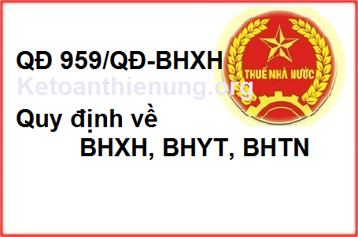

Quyết định 959/QĐ-BHXH quản lý thu bảo hiểm xã hội, bảo hiểm y tế, bảo hiểm thất nghiệp: Quản lý sổ BHXH, Thẻ BHYT ban hành ngày 9/9/2015 của BHXH Việt Nam.
|
BẢO HIỂM XÃ HỘI VIỆT NAM |
CỘNG HÒA XÃ HỘI CHỦ NGHĨA VIỆT NAM |
|
Số: 959/QĐ-BHXH |
Hà Nội, ngày 09 tháng 09 năm 2015 |
QUYẾT ĐỊNH
BAN HÀNH QUY ĐỊNH VỀ QUẢN LÝ THU BẢO HIỂM XÃ HỘI, BẢO HIỂM Y TẾ, BẢO HIỂM THẤT NGHIỆP; QUẢN LÝ SỔ BẢO HIỂM XÃ HỘI, THẺ BẢO HIỂM Y TẾ
TỔNG GIÁM ĐỐC BẢO HIỂM XÃ HỘI VIỆT NAM
Căn cứ Luật Bảo hiểm xã hội số 58/2014/QH13 ngày 20 tháng 11 năm 2014;
Căn cứ Luật Bảo hiểm y tế số 25/2008/QH12 ngày 14 tháng 11 năm 2008; Luật số 46/2014/QH13 ngày 13 tháng 6 năm 2014 sửa đổi, bổ sung một số điều của Luật Bảo hiểm y tế;
Căn cứ Luật Việc làm số 38/2013/QH13 ngày 16 tháng 11 năm 2013;
Căn cứ Nghị định số 05/2014/NĐ-CP ngày 17 tháng 01 năm 2014 của Chính phủ quy định chức năng, nhiệm vụ, quyền hạn và cơ cấu tổ chức của Bảo hiểm xã hội Việt Nam;
Xét đề nghị của Trưởng Ban Thu, Trưởng Ban Sổ - Thẻ,
QUYẾT ĐỊNH:
Điều 1. Ban hành kèm theo Quyết định này: Quy định về quản lý thu bảo hiểm xã hội, bảo hiểm y tế, bảo hiểm thất nghiệp; quản lý sổ bảo hiểm xã hội, thẻ bảo hiểm y tế.
Điều 2. Quyết định này có hiệu lực thi hành từ ngày 01 tháng 12 năm 2015, thay thế Quyết định số 1111/QĐ-BHXH ngày 25 tháng 10 năm 2011 ban hành Quy định về quản lý thu bảo hiểm xã hội, bảo hiểm y tế; quản lý sổ bảo hiểm xã hội, thẻ bảo hiểm y tế. Bãi bỏ Điều 1 Quyết định số 1018/QĐ-BHXH ngày 10 tháng 10 năm 2014 sửa đổi một số nội dung tại các quyết định ban hành quy định quản lý thu, chi bảo hiểm xã hội, bảo hiểm y tế. Các văn bản quy định do Bảo hiểm xã hội Việt Nam ban hành trước đây trái với Quyết định này đều hết hiệu lực.
Điều 3. Trưởng Ban Thu, Trưởng Ban Sổ - Thẻ, Chánh Văn phòng, Thủ trưởng các đơn vị trực thuộc Bảo hiểm xã hội Việt Nam; Giám đốc bảo hiểm xã hội các tỉnh, thành phố trực thuộc Trung ương chịu trách nhiệm thi hành Quyết định này./.
|
Nơi nhận: |
TỔNG GIÁM ĐỐC |
QUY ĐỊNH
QUẢN LÝ THU BẢO HIỂM XÃ HỘI, BẢO HIỂM Y TẾ, BẢO HIỂM THẤT NGHIỆP; QUẢN LÝ SỔ BẢO HIỂM XÃ HỘI, THẺ BẢO HIỂM Y TẾ
(Ban hành kèm theo Quyết định số 959/QĐ-BHXH ngày 09 tháng 9 năm 2015 của Tổng Giám đốc Bảo hiểm xã hội Việt Nam)
Chương I
QUY ĐỊNH CHUNG
Điều 1. Phạm vi áp dụng
1. Văn bản này quy định, hướng dẫn về hồ sơ, quy trình nghiệp vụ, quyền và trách nhiệm của cá nhân, cơ quan, đơn vị và tổ chức bảo hiểm xã hội trong thực hiện thu bảo hiểm xã hội, bảo hiểm y tế, bảo hiểm thất nghiệp; cấp, ghi, quản lý và sử dụng sổ bảo hiểm xã hội, thẻ bảo hiểm y tế.
2. Quy định thu bảo hiểm xã hội, bảo hiểm y tế, bảo hiểm thất nghiệp; cấp, ghi, quản lý và sử dụng sổ bảo hiểm xã hội, thẻ bảo hiểm y tế trong lực lượng vũ trang do Bộ Quốc phòng, Bộ Công an quy định phù hợp với đặc thù của từng Bộ và đồng bộ với các quy định tại Văn bản này để thực hiện chính sách, chế độ bảo hiểm xã hội, bảo hiểm y tế, bảo hiểm thất nghiệp thống nhất trong toàn quốc.
Điều 2. Giải thích từ ngữ
Trong Văn bản này, các từ ngữ dưới đây được hiểu như sau:
- BHXH: là viết tắt của từ “bảo hiểm xã hội”.
- BHTN: là viết tắt của từ “bảo hiểm thất nghiệp”.
- BHYT: là viết tắt của từ “bảo hiểm y tế”.
- UBND: là viết tắt của từ “Ủy ban nhân dân”.
- “Thông tư số 41/2014/TTLT-BYT-BTC” là viết tắt của Thông tư liên tịch số 41/2014/TTLT-BYT-BTC ngày 24/11/2014 của Liên Bộ Y tế, Bộ Tài chính về việc hướng dẫn thực hiện BHYT.
- Đơn vị: gọi chung cho cơ quan, đơn vị, doanh nghiệp, tổ chức, cá nhân sử dụng lao động thuộc đối tượng tham gia BHXH bắt buộc, BHYT, BHTN.
- Người tham gia: gọi chung cho người lao động tham gia BHXH bắt buộc, BHTN, BHYT; người tham gia BHXH tự nguyện, BHYT; trừ trường hợp nêu cụ thể.
- Cơ quan quản lý đối tượng: là cơ quan có thẩm quyền xác định và phê duyệt danh sách người tham gia như người thuộc hộ gia đình nghèo, thương binh, người có công với cách mạng, thân nhân người có công với cách mạng, người thuộc diện hưởng bảo trợ xã hội hàng tháng, cựu chiến binh, trẻ em ... trên cơ sở phân cấp của UBND cấp tỉnh.
- Đại lý thu: là viết tắt của từ “đại lý thu BHXH, BHYT”.
- KH-TC: là viết tắt của từ “Kế hoạch - Tài chính”.
- BHXH tỉnh: là tên chung cho Bảo hiểm xã hội tỉnh, thành phố trực thuộc Trung ương.
- BHXH huyện: là tên chung cho Bảo hiểm xã hội quận, huyện, thị xã, thành phố thuộc tỉnh.
- HĐLĐ: viết tắt của “hợp đồng lao động”.
- HĐLV: viết tắt của “hợp đồng làm việc”.
- Bộ phận một cửa: là tên gọi chung cho bộ phận một cửa của BHXH huyện hoặc bộ phận một cửa thuộc Phòng Tiếp nhận và Trả kết quả thủ tục hành chính của BHXH tỉnh.
- Bản sao: là bản chụp từ bản chính hoặc bản đánh máy có nội dung đầy đủ, chính xác như nội dung ghi trong sổ gốc.
Đơn vị, người tham gia BHXH, BHYT, BHTN khi nộp “bản sao” theo quy định tại Văn bản này phải kèm theo bản chính để cơ quan BHXH kiểm tra, đối chiếu và trả lại cho đơn vị, người tham gia.
- Bản chính: là những giấy tờ, văn bản do cơ quan, tổ chức có thẩm quyền cấp lần đầu, cấp lại, cấp khi đăng ký lại; những giấy tờ, văn bản do cá nhân tự lập có xác nhận và đóng dấu của cơ quan, tổ chức có thẩm quyền.
- Văn bản chứng thực: là giấy tờ, văn bản, hợp đồng, giao dịch đã được chứng thực theo quy định của pháp luật.
- Sổ BHXH: gồm Bìa sổ và các trang tờ rời, được cấp đối với từng người tham gia BHXH, để theo dõi việc đóng, hưởng các chế độ BHXH và là cơ sở để giải quyết các chế độ BHXH theo quy định của Luật BHXH.
- Nợ BHXH, BHYT, BHTN: là tiền phải đóng BHXH, BHYT, BHTN đối với người lao động theo đăng ký của đơn vị nhưng đơn vị chưa đóng cho cơ quan BHXH. Tiền nợ bao gồm cả tiền Iãi chậm đóng theo quy định của pháp luật nhưng đơn vị chưa đóng.
- Hoàn trả: là việc cơ quan BHXH chuyển trả lại số tiền được xác định không phải tiền đóng BHXH, BHYT, BHTN hoặc đóng thừa khi ngừng giao dịch với cơ quan BHXH; đóng trùng cho cơ quan, đơn vị, cá nhân đã nộp cho cơ quan BHXH.
- Xác nhận sổ BHXH: là ghi quá trình đóng BHXH, BHTN trên sổ BHXH của người tham gia đang đóng BHXH, BHTN.
- Chốt sổ BHXH: là ghi quá trình đóng BHXH, BHTN trên sổ BHXH của người tham gia dừng đóng BHXH tại một đơn vị.
- Các Chương, Mục, Điều, Khoản, Điểm, Tiết và Mẫu biểu dẫn chiếu trong Văn bản này mà không ghi rõ nguồn thì được hiểu là của Văn bản này.
- Tên Tổ nghiệp vụ của BHXH huyện tại Văn bản này là tên Tổ nghiệp vụ hoặc để chỉ phần chức năng, nhiệm vụ của Tổ Nghiệp vụ gộp nhiều chức năng, nhiệm vụ theo quy định tại Điều 7 Quyết định số 99/QĐ-BHXH ngày 28/01/2015 của BHXH Việt Nam quy định chức năng, nhiệm vụ, quyền hạn và cơ cấu tổ chức của BHXH địa phương.
Điều 3. Phân cấp quản lý
1. Thu BHXH, BHYT, BHTN
1.1. BHXH huyện:
a) Thu tiền đóng BHXH, BHYT, BHTN của đơn vị đóng trụ sở trên địa bàn huyện theo phân cấp của BHXH tỉnh.
b) Giải quyết các trường hợp truy thu, hoàn trả BHXH, BHYT, BHTN; tạm dừng đóng vào quỹ hưu trí và tử tuất đối với đơn vị, người tham gia BHXH, BHYT, BHTN do BHXH huyện trực tiếp thu.
c) Thu BHXH tự nguyện; thu BHYT đối với hộ gia đình, người tham gia BHYT cư trú trên địa bàn huyện.
d) Thu tiền hỗ trợ mức đóng BHYT, BHXH tự nguyện của ngân sách theo phân cấp quản lý ngân sách.
đ) Ghi thu tiền đóng BHYT của đối tượng do quỹ BHXH, quỹ BHTN đảm bảo theo phân cấp của BHXH tỉnh.
1.2. BHXH tỉnh:
a) Thu BHXH, BHYT, BHTN của các đơn vị chưa phân cấp cho BHXH huyện.
b) Giải quyết các trường hợp truy thu, hoàn trả BHXH, BHYT, BHTN; tạm dừng đóng vào quỹ hưu trí và tử tuất đối với đơn vị, người tham gia BHXH, BHYT, BHTN do BHXH tỉnh trực tiếp thu.
c) Thu BHYT của đối tượng do ngân sách tỉnh đóng; ghi thu tiền đóng BHYT do quỹ BHXH, quỹ BHTN đảm bảo.
d) Thu tiền hỗ trợ mức đóng BHYT, hỗ trợ mức đóng BHXH tự nguyện của ngân sách.
1.3. BHXH Việt Nam:
a) Thu tiền của ngân sách Trung ương đóng, hỗ trợ mức đóng BHYT, BHXH tự nguyện, tiền hỗ trợ quỹ BHTN.
b) Thu tiền của ngân sách Trung ương đóng BHXH cho người có thời gian công tác trước năm 1995.
2. Cấp, ghi và xác nhận trên sổ BHXH
2.1. BHXH huyện:
a) Cấp mới, cấp lại, điều chỉnh, xác nhận, chốt sổ BHXH và ghi thời gian đóng BHTN đã được hưởng trợ cấp thất nghiệp cho người tham gia BHXH tại đơn vị do BHXH huyện trực tiếp thu, người đã hưởng BHXH hoặc đang bảo lưu thời gian đóng BHXH, BHTN.
b) Chuyển BHXH tỉnh: Hồ sơ đề nghị cộng nối thời gian không phải đóng BHXH; điều chỉnh làm nghề hoặc công việc nặng nhọc, độc hại, nguy hiểm hoặc đặc biệt nặng nhọc, độc hại, nguy hiểm thời gian trước ngày 01/01/1995.
2.2. BHXH tỉnh:
a) Cấp mới, cấp lại, điều chỉnh, xác nhận, chốt sổ BHXH cho người tham gia BHXH tại đơn vị do BHXH tỉnh trực tiếp thu, người đã hưởng BHXH hoặc đang bảo lưu thời gian đóng BHXH, BHTN.
b) Thẩm định hồ sơ đề nghị cộng nối thời gian không phải đóng BHXH; điều chỉnh làm nghề hoặc công việc nặng nhọc, độc hại, nguy hiểm hoặc đặc biệt nặng nhọc, độc hại, nguy hiểm thời gian trước ngày 01/01/1995.
3. Cấp thẻ BHYT
3.1. BHXH huyện:
Cấp mới, cấp lại, đổi thẻ BHYT cho người tham gia BHYT do BHXH huyện thu, các trường hợp BHXH tỉnh ủy quyền cho BHXH huyện cấp thẻ BHYT; cấp lại, đổi thẻ BHYT các trường hợp đang hưởng trợ cấp thất nghiệp tại huyện.
3.2. BHXH tỉnh:
Cấp mới, cấp lại, đổi thẻ BHYT cho người tham gia BHYT tại các đơn vị do BHXH tỉnh trực tiếp thu và người hưởng trợ cấp thất nghiệp trong tỉnh.
Chương II
ĐỐI TƯỢNG, MỨC ĐÓNG VÀ PHƯƠNG THỨC ĐÓNG
Mục 1: BẢO HIỂM XÃ HỘI BẮT BUỘC
Điều 4. Đối tượng tham gia
1. Người lao động là công dân Việt Nam thuộc đối tượng tham gia BHXH bắt buộc, bao gồm:
1.1. Người làm việc theo HĐLĐ không xác định thời hạn, HĐLĐ xác định thời hạn, HĐLĐ theo mùa vụ hoặc theo một công việc nhất định có thời hạn từ đủ 03 tháng đến dưới 12 tháng, kể cả HĐLĐ được ký kết giữa đơn vị với người đại diện theo pháp luật của người dưới 15 tuổi theo quy định của pháp luật về lao động;
1.2. Người làm việc theo HĐLĐ có thời hạn từ đủ 01 tháng đến dưới 03 tháng (thực hiện từ 01/01/2018);
1.3. Cán bộ, công chức, viên chức theo quy định của pháp luật về cán bộ, công chức và viên chức;
1.4. Công nhân quốc phòng, công nhân công an, người làm công tác khác trong tổ chức cơ yếu (trường hợp BHXH Bộ Quốc phòng, BHXH Công an nhân dân bàn giao cho BHXH các tỉnh);
1.5. Người quản lý doanh nghiệp, người quản lý điều hành hợp tác xã có hưởng tiền lương;
1.6. Người hoạt động không chuyên trách ở xã, phường, thị trấn tham gia BHXH bắt buộc vào quỹ hưu trí và tử tuất (thực hiện từ 01/01/2016);
1.7. Người đi làm việc ở nước ngoài theo hợp đồng quy định tại Luật người lao động Việt Nam đi làm việc ở nước ngoài theo hợp đồng;
1.8. Người hưởng chế độ phu nhân hoặc phu quân tại cơ quan đại diện Việt Nam ở nước ngoài quy định tại Khoản 4 Điều 123 Luật BHXH.
2. Người lao động là công dân nước ngoài vào làm việc tại Việt Nam có giấy phép lao động hoặc chứng chỉ hành nghề hoặc giấy phép hành nghề do cơ quan có thẩm quyền của Việt Nam cấp (thực hiện từ 01/01/2018).
3. Người sử dụng lao động tham gia BHXH bắt buộc bao gồm: cơ quan nhà nước, đơn vị sự nghiệp, đơn vị vũ trang nhân dân; tổ chức chính trị, tổ chức chính trị - xã hội, tổ chức chính trị xã hội - nghề nghiệp, tổ chức xã hội - nghề nghiệp, tổ chức xã hội khác; cơ quan, tổ chức nước ngoài, tổ chức quốc tế hoạt động trên lãnh thổ Việt Nam; doanh nghiệp, hợp tác xã, hộ kinh doanh cá thể, tổ hợp tác, tổ chức khác và cá nhân có thuê mướn, sử dụng lao động theo HĐLĐ.
Điều 5. Mức đóng và trách nhiệm đóng
1. Mức đóng và trách nhiệm đóng của người lao động
1.1. Người lao động quy định tại Điểm 1.1, 1.2, 1.3, 1.4, 1.5, Khoản 1 Điều 4, hằng tháng đóng bằng 8% mức liền lương tháng vào quỹ hưu trí và tử tuất.
1.2. Người lao động quy định tại Điểm 1.6 Khoản 1 Điều 4, hằng tháng đóng bằng 8% mức lương cơ sở vào quỹ hưu trí và tử tuất.
1.3. Người lao động quy định tại Điểm 1.7 Khoản 1 Điều 4.
Mức đóng hằng tháng vào quỹ hưu trí và tử tuất bằng 22% mức tiền lương tháng đóng BHXH của người lao động trước khi đi làm việc ở nước ngoài, đối với người lao động đã có quá trình tham gia BHXH bắt buộc; bằng 22% của 02 lần mức lương cơ sở đối với người lao động chưa tham gia BHXH bắt buộc hoặc đã tham gia BHXH bắt buộc nhưng đã hưởng BHXH một lần.
1.4. Người lao động quy định tại Điểm 1.8 Khoản 1, Khoản 2 Điều 4:
Thực hiện theo Văn bản quy định của Chính phủ và hướng dẫn của BHXH Việt Nam.
1.5. Người lao động quy định tại Khoản 1 Điều 4 còn thiếu tối đa không quá 06 tháng để đủ điều kiện hưởng lương hưu hoặc trợ cấp tuất hằng tháng: mức đóng hằng tháng bằng 22% mức tiền lương tháng đóng BHXH bắt buộc của người lao động trước khi nghỉ việc (hoặc chết) vào quỹ hưu trí và tử tuất (thực hiện đến 31/12/2015; từ 01/01/2016, thực hiện theo Văn bản quy định của Chính phủ và hướng dẫn của BHXH Việt Nam).
2. Mức đóng và trách nhiệm đóng của đơn vị
2.1. Đơn vị hằng tháng đóng trên quỹ tiền lương đóng BHXH của người lao động quy định tại các Điểm 1.1, 1.2, 1.3, 1.4, 1.5 Khoản 1 Điều 4 như sau:
a) 3% vào quỹ ốm đau và thai sản;
b) 1% vào quỹ tai nạn lao động, bệnh nghề nghiệp;
c) 14% vào quỹ hưu trí và tử tuất.
2.2. Đơn vị hằng tháng đóng 14% mức lương cơ sở vào quỹ hưu trí và tử tuất cho người lao động quy định tại Điểm 1.6 Khoản 1 Điều 4.
Điều 6. Tiền Iương tháng đóng BHXH bắt buộc
1. Tiền lương do Nhà nước quy định
1.1. Người lao động thuộc đối tượng thực hiện chế độ tiền lương do Nhà nước quy định thì tiền lương tháng đóng BHXH bắt buộc là tiền lương theo ngạch, bậc, cấp bậc quân hàm và các khoản phụ cấp chức vụ, phụ cấp thâm niên vượt khung, phụ cấp thâm niên nghề (nếu có). Tiền lương này tính trên mức lương cơ sở.
Tiền lương tháng đóng BHXH bắt buộc quy định tại Điểm này bao gồm cả hệ số chênh lệch bảo lưu theo quy định của pháp luật về tiền lương.
1.2. Người lao động quy định tại Điểm 1.6, Khoản 1 Điều 4 thì tiền lương tháng đóng BHXH là mức lương cơ sở.
2. Tiền lương do đơn vị quyết định
2.1. Người lao động thực hiện chế độ tiền lương do đơn vị quyết định thì tiền lương tháng đóng BHXH là tiền lương ghi trong HĐLĐ.
Từ 01/01/2016, tiền lương tháng đóng BHXH là mức lương và phụ cấp lương theo quy định của pháp luật lao động.
Từ ngày 01/01/2018 trở đi, tiền lương tháng đóng BHXH là mức lương, phụ cấp lương và các khoản bổ sung khác theo quy định của pháp luật lao động.
2.2. Mức tiền lương tháng đóng BHXH bắt buộc quy định tại Khoản này không thấp hơn mức lương tối thiểu vùng tại thời điểm đóng.
Người lao động đã qua học nghề (kể cả lao động do doanh nghiệp dạy nghề) thì tiền lương đóng BHXH bắt buộc phải cao hơn ít nhất 7% so với mức lương tối thiểu vùng, nếu làm công việc nặng nhọc, độc hại, nguy hiểm hoặc đặc biệt nặng nhọc, độc hại, nguy hiểm thì cộng thêm 5%.
3. Mức tiền lương tháng đóng BHXH bắt buộc quy định tại Điều này mà cao hơn 20 tháng lương cơ sở thì mức tiền lương tháng đóng BHXH bắt buộc bằng 20 tháng lương cơ sở.
Điều 7. Phương thức đóng
1. Đóng hằng tháng
Hằng tháng, chậm nhất đến ngày cuối cùng của tháng, đơn vị trích tiền đóng BHXH bắt buộc trên quỹ tiền lương tháng của những người lao động tham gia BHXH bắt buộc, đồng thời trích từ tiền lương tháng đóng BHXH bắt buộc của từng người lao động theo mức quy định, chuyển cùng một lúc vào tài khoản chuyên thu của cơ quan BHXH mở tại ngân hàng hoặc Kho bạc Nhà nước.
2. Đóng 3 tháng hoặc 6 tháng một lần
Đơn vị là doanh nghiệp, hợp tác xã, hộ kinh doanh cá thể, tổ hợp tác hoạt động trong lĩnh vực nông nghiệp, lâm nghiệp, ngư nghiệp, diêm nghiệp trả lương theo sản phẩm, theo khoán thì đóng theo phương thức hằng tháng hoặc 3 tháng, 6 tháng một lần. Chậm nhất đến ngày cuối cùng của kỳ đóng, đơn vị phải chuyển đủ tiền vào quỹ BHXH.
3. Đóng theo địa bàn
3.1. Đơn vị đóng trụ sở chính ở địa bàn tỉnh nào thì đăng ký tham gia đóng BHXH tại địa bàn tỉnh đó theo phân cấp của cơ quan BHXH tỉnh.
3.2. Chi nhánh của doanh nghiệp đóng BHXH tại địa bàn nơi cấp giấy phép kinh doanh cho chi nhánh.
4. Đối với người lao động quy định tại Điểm 1.7 Khoản 1 Điều 4, phương thức đóng là 3 tháng, 6 tháng, 12 tháng một lần hoặc đóng trước một lần theo thời hạn ghi trong hợp đồng đưa người lao động đi làm việc ở nước ngoài. Người lao động đóng trực tiếp cho cơ quan BHXH trước khi đi làm việc ở nước ngoài hoặc đóng qua doanh nghiệp, tổ chức sự nghiệp đưa người lao động đi làm việc ở nước ngoài.
4.1. Trường hợp đóng qua doanh nghiệp, tổ chức sự nghiệp đưa người lao động đi làm việc ở nước ngoài thì doanh nghiệp, tổ chức sự nghiệp thu, nộp BHXH cho người lao động và đăng ký phương thức đóng cho cơ quan BHXH.
4.2. Trường hợp người lao động được gia hạn hợp đồng hoặc ký HĐLĐ mới ngay tại nước tiếp nhận lao động thì thực hiện đóng BHXH theo phương thức quy định tại Điều này hoặc truy nộp cho cơ quan BHXH sau khi về nước.
5. Đối với người lao động quy định tại Điểm 1.8 Khoản 1 Điều 4.
Thực hiện theo Văn bản quy định của Chính phủ và hướng dẫn của BHXH Việt Nam.
6. Đối với trường hợp đóng cho thời gian còn thiếu không quá 6 tháng quy định tại Điểm 1.5 Khoản 1 Điều 5.
6.1. Người lao động đóng một lần cho số tháng còn thiếu thông qua đơn vị trước khi nghỉ việc.
6.2. Thân nhân của người lao động chết đóng một lần cho số tháng còn thiếu cho cơ quan BHXH huyện.
Mục 2: BẢO HIỂM XÃ HỘI TỰ NGUYỆN
Điều 8. Đối tượng tham gia
Người tham gia BHXH tự nguyện là công dân Việt Nam từ đủ 15 tuổi trở lên, không thuộc đối tượng tham gia BHXH bắt buộc.
Điều 9. Mức đóng
1. Mức đóng hằng tháng bằng 22% mức thu nhập tháng do người tham gia BHXH tự nguyện lựa chọn.
2. Mức thu nhập tháng do người tham gia BHXH tự nguyện lựa chọn thấp nhất bằng mức chuẩn hộ nghèo của khu vực nông thôn theo quy định của Thủ tướng Chính phủ và cao nhất bằng 20 lần mức lương cơ sở tại thời điểm đóng.
Điều 10. Phương thức đóng
1. Người tham gia BHXH tự nguyện được chọn một trong các phương thức đóng sau đây để đóng vào quỹ hưu trí và tử tuất:
1.1. Đóng hằng tháng;
1.2. Đóng 3 tháng một lần;
1.3. Đóng 6 tháng một lần;
1.4. Đóng 12 tháng một lần;
1.5. Đóng một lần cho nhiều năm về sau theo quy định của Chính phủ;
1.6. Đóng một lần cho những năm còn thiếu theo quy định của Chính phủ.
2. Mức đóng 3 tháng hoặc 6 tháng hoặc 12 tháng một lần được xác định bằng mức đóng hằng tháng theo quy định tại Điều 9 nhân với 3 đối với phương thức đóng 3 tháng; nhân với 6 đối với phương thức đóng 6 tháng; nhân với 12 đối với phương thức đóng 12 tháng một lần.
3. Trường hợp người tham gia BHXH tự nguyện đã đóng theo phương thức đóng 3 tháng hoặc 6 tháng hoặc 12 tháng một lần hoặc đóng một lần cho nhiều năm về sau mà trong thời gian đó Chính phủ điều chỉnh mức chuẩn hộ nghèo của khu vực nông thôn thì không phải điều chỉnh mức chênh lệch số tiền đã đóng.
4. Người tham gia BHXH tự nguyện đã đóng theo phương thức đóng 3 tháng hoặc 6 tháng hoặc 12 tháng một lần hoặc đóng một lần cho nhiều năm về sau mà trong thời gian đó thuộc một trong các trường hợp sau đây sẽ được hoàn trả một phần số tiền đã đóng trước đó:
4.1. Thuộc đối tượng tham gia BHXH bắt buộc;
4.2. Hưởng BHXH một lần;
4.3. Bị chết hoặc Tòa án tuyên bố là đã chết.
5. Người tham gia BHXH tự nguyện được thay đổi phương thức đóng hoặc mức thu nhập tháng làm căn cứ đóng BHXH tự nguyện sau khi thực hiện xong phương thức đóng đã chọn trước đó.
Điều 11. Thời điểm đóng
Thực hiện theo Văn bản quy định của Chính phủ và hướng dẫn của BHXH Việt Nam.
Điều 12. Hỗ trợ tiền đóng BHXH cho người tham gia BHXH tự nguyện
Thực hiện theo Văn bản quy định của Chính phủ và hướng dẫn của BHXH Việt Nam.
Mục 3: BẢO HIỂM THẤT NGHIỆP
Điều 13. Đối tượng tham gia
1. Người lao động
1.1. Người lao động tham gia BHTN khi làm việc theo HĐLĐ hoặc HĐLV như sau:
a) HĐLĐ hoặc HĐLV không xác định thời hạn;
b) HĐLĐ hoặc HĐLV xác định thời hạn;
c) HĐLĐ theo mùa vụ hoặc theo một công việc nhất định có thời hạn từ đủ 3 tháng đến dưới 12 tháng.
1.2. Người đang hưởng lương hưu, trợ cấp mất sức lao động hàng tháng; người giúp việc gia đình có giao kết HĐLĐ với đơn vị quy định tại Khoản 2 Điều này không thuộc đối tượng tham gia BHTN.
2. Đơn vị tham gia BHTN
Đơn vị tham gia BHTN là những đơn vị quy định tại Khoản 3 Điều 4.
Điều 14. Mức đóng và trách nhiệm đóng
Mức đóng và trách nhiệm đóng BHTN được quy định như sau:
1. Người lao động đóng bằng 1% tiền lương tháng;
2. Đơn vị đóng bằng 1% quỹ tiền lương tháng của những người lao động đang tham gia BHTN;
3. Nhà nước hỗ trợ tối đa 1% quỹ tiền lương tháng đóng BHTN của những người lao động đang tham gia BHTN và do ngân sách trung ương bảo đảm.
Điều 15. Tiền lương tháng đóng BHTN
1. Người lao động thuộc đối tượng thực hiện chế độ tiền lương do Nhà nước quy định thì tiền lương tháng đóng BHTN là tiền lương làm căn cứ đóng BHXH bắt buộc quy định tại Khoản 1 và Khoản 3 Điều 6.
2. Người lao động đóng BHTN theo chế độ tiền lương do đơn vị quyết định thì tiền lương tháng đóng BHTN là tiền lương làm căn cứ đóng BHXH bắt buộc quy định tại Khoản 2 Điều 6. Trường hợp mức tiền lương tháng của người lao động cao hơn hai mươi tháng lương tối thiểu vùng thì mức tiền lương tháng đóng BHTN bằng hai mươi tháng lương tối thiểu vùng (thực hiện từ ngày 01/01/2015).
Điều 16. Phương thức đóng
Phương thức đóng BHTN đối với đơn vị và người lao động; như quy định tại Khoản 1, 2 và Khoản 3 Điều 7.
Mục 4: BẢO HIỂM Y TẾ
Điều 17. Đối tượng tham gia BHYT
1. Nhóm do người lao động và đơn vị đóng, bao gồm:
1.1. Người lao động làm việc theo HĐLĐ không xác định thời hạn, HĐLĐ có thời hạn từ đủ 3 tháng trở lên, người lao động là người quản lý doanh nghiệp, quản lý điều hành Hợp tác xã hưởng tiền lương, làm việc tại các cơ quan, đơn vị, tổ chức quy định tại Khoản 3 Điều 4;
1.2. Cán bộ, công chức, viên chức theo quy định của pháp luật về cán bộ, công chức, viên chức;
1.3. Người hoạt động không chuyên trách ở xã, phường, thị trấn theo quy định của pháp luật về cán bộ, công chức.
2. Nhóm do tổ chức BHXH đóng, bao gồm:
2.1. Người hưởng lương hưu, trợ cấp mất sức lao động hằng tháng;
2.2. Người đang hưởng trợ cấp BHXH hằng tháng do bị tai nạn lao động - bệnh nghề nghiệp;
2.3. Người lao động nghỉ việc đang hưởng chế độ ốm đau theo quy định của pháp luật về BHXH do mắc bệnh thuộc danh mục bệnh cần chữa trị dài ngày theo quy định của Bộ trưởng Bộ Y tế; Công nhân cao su đang hưởng trợ cấp hằng tháng theo Quyết định số 206/CP ngày 30/5/1979 của Hội đồng Chính phủ (nay là Chính phủ) về chính sách đối với công nhân mới giải phóng làm nghề nặng nhọc, có hại sức khỏe nay già yếu phải thôi việc;
2.4. Người từ đủ 80 tuổi trở lên đang hưởng trợ cấp tuất hằng tháng;
2.5. Cán bộ xã, phường, thị trấn đã nghỉ việc đang hưởng trợ cấp BHXH hằng tháng;
2.6. Người đang hưởng trợ cấp thất nghiệp;
2.7. Người lao động nghỉ việc hưởng chế độ thai sản theo quy định của pháp luật về BHXH.
3. Nhóm do ngân sách nhà nước đóng, bao gồm:
3.1. Cán bộ xã, phường, thị trấn đã nghỉ việc đang hưởng trợ cấp từ ngân sách nhà nước hằng tháng bao gồm các đối tượng theo quy định tại Quyết định số 130/CP ngày 20/6/1975 của Hội đồng Chính phủ (nay là Chính phủ) bổ sung chính sách, chế độ đối với cán bộ xã và Quyết định số 111/HĐBT ngày 13/10/1981 của Hội đồng Bộ trưởng (nay là Chính phủ) về việc sửa đổi, bổ sung một số chính sách, chế độ đối với cán bộ xã, phường;
3.2. Người đã thôi hưởng trợ cấp mất sức lao động đang hưởng trợ cấp hằng tháng từ ngân sách nhà nước theo Quyết định số 613/QĐ-TTg ngày 01/6/2010 của Thủ tướng Chính phủ về việc trợ cấp hàng tháng cho những người có từ đủ 15 năm đến dưới 20 năm công tác thực tế đã hết thời hạn hưởng trợ cấp mất sức lao động; Quyết định số 91/2000/QĐ-TTg ngày 04/7/2000 của Thủ tướng Chính phủ về việc trợ cấp cho những người đã hết tuổi lao động tại thời điểm ngừng hưởng trợ cấp mất sức lao động hàng tháng;
3.3. Người có công với cách mạng, cựu chiến binh, bao gồm:
a) Người có công với cách mạng theo quy định tại Pháp lệnh Ưu đãi người có công với cách mạng;
b) Cựu chiến binh đã tham gia kháng chiến từ ngày 30/4/1975 trở về trước theo Khoản 6 Điều 5 Nghị định số 150/2006/NĐ-CP ngày 12/12/2006 của Chính phủ quy định chi tiết và hướng dẫn thi hành một số điều của Pháp lệnh Cựu chiến binh;
c) Người trực tiếp tham gia kháng chiến chống Mỹ cứu nước nhưng chưa được hưởng chính sách của Đảng và Nhà nước theo Quyết định số 290/2005/QĐ-TTg ngày 08/11/2005 của Thủ tướng Chính phủ về chế độ, chính sách đối với một số đối tượng trực tiếp tham gia kháng chiến chống Mỹ cứu nước nhưng chưa được hưởng chính sách của Đảng và Nhà nước và Quyết định số 188/2007/QĐ-TTg ngày 06/12/2007 của Thủ tướng Chính phủ về việc sửa đổi, bổ sung Quyết định số 290/2005/QĐ-TTg;
d) Cán bộ, chiến sĩ Công an nhân dân tham gia kháng chiến chống Mỹ có dưới 20 năm công tác trong Công an nhân dân đã thôi việc, xuất ngũ về địa phương theo Quyết định số 53/2010/QĐ-TTg ngày 20/8/2010 của Thủ tướng Chính phủ về chế độ đối với cán bộ, chiến sĩ Công an nhân dân tham gia kháng chiến chống Mỹ có dưới 20 năm công tác trong Công an nhân dân đã thôi việc, xuất ngũ về địa phương;
đ) Quân nhân tham gia kháng chiến chống Mỹ cứu nước có dưới 20 năm công tác trong quân đội, đã phục viên, xuất ngũ về địa phương theo Quyết định số 142/2008/QĐ-TTg ngày 27/10/2008 của Thủ tướng Chính phủ về thực hiện chế độ đối với quân nhân tham gia kháng chiến chống Mỹ cứu nước có dưới 20 năm công tác trong quân đội, đã phục viên, xuất ngũ về địa phương và Quyết định số 38/2010/QĐ-TTg ngày 06/5/2010 của Thủ tướng Chính phủ về việc sửa đổi, bổ sung Quyết định số 142/2008/QĐ-TTg;
e) Người tham gia chiến tranh bảo vệ Tổ quốc, làm nhiệm vụ quốc tế ở Căm-pu-chia, giúp bạn Lào sau ngày 30/4/1975 đã phục viên, xuất ngũ, thôi việc theo Quyết định số 62/2011/QĐ-TTg ngày 09/11/2011 của Thủ tướng Chính phủ về chế độ, chính sách đối với đối tượng tham gia chiến tranh bảo vệ Tổ quốc, làm nhiệm vụ quốc tế ở Căm-pu-chia, giúp bạn Lào sau ngày 30/4/1975 đã phục viên, xuất ngũ, thôi việc;
g) Thanh niên xung phong theo Quyết định số 170/2008/QĐ-TTg ngày 18/12/2008 của Thủ tướng Chính phủ về chế độ BHYT và trợ cấp mai táng phí đối với thanh niên xung phong thời kỳ kháng chiến chống Pháp và Quyết định số 40/2011/QĐ-TTg ngày 27/7/2011 của Thủ tướng Chính phủ quy định về chế độ đối với thanh niên xung phong đã hoàn thành nhiệm vụ trong kháng chiến;
3.4. Đại biểu được bầu cử giữ chức vụ theo nhiệm kỳ Quốc hội, đại biểu Hội đồng nhân dân các cấp đương nhiệm;
3.5. Trẻ em dưới 6 tuổi (bao gồm toàn bộ trẻ em cư trú trên địa bàn, kể cả trẻ em là thân nhân của người trong lực lượng vũ trang theo quy định, không phân biệt hộ khẩu thường trú);
3.6. Người thuộc diện hưởng trợ cấp bảo trợ xã hội hằng tháng quy định tại Nghị định số 136/2013/NĐ-CP ngày 21/10/2013 của Chính phủ quy định chính sách trợ giúp xã hội đối với đối tượng bảo trợ xã hội, Nghị định số 06/2011/NĐ-CP ngày 14/01/2011 của Chính phủ quy định chi tiết và hướng dẫn thi hành một số điều của Luật người cao tuổi và Nghị định số 28/2012/NĐ-CP ngày 10/4/2012 của Chính phủ quy định chi tiết và hướng dẫn thi hành một số điều của Luật người khuyết tật;
3.7. Người thuộc hộ gia đình nghèo; người dân tộc thiểu số đang sinh sống tại vùng có điều kiện kinh tế - xã hội khó khăn; người đang sinh sống tại vùng có điều kiện kinh tế - xã hội đặc biệt khó khăn; người đang sinh sống tại xã đảo, huyện đảo theo Nghị quyết của Chính phủ, Quyết định của Thủ tướng Chính phủ và Quyết định của Bộ trưởng, Chủ nhiệm Ủy ban Dân tộc;
3.8. Thân nhân của người có công với cách mạng là cha đẻ, mẹ đẻ, vợ hoặc chồng, con của liệt sỹ; người có công nuôi dưỡng liệt sỹ;
3.9. Thân nhân của người có công với cách mạng, trừ các đối tượng quy định tại Điểm 3.8 Khoản này, bao gồm:
a) Cha đẻ, mẹ đẻ, vợ hoặc chồng, con từ trên 6 tuổi đến dưới 18 tuổi hoặc từ đủ 18 tuổi trở lên nếu còn tiếp tục đi học hoặc; bị khuyết tật nặng, khuyết tật đặc biệt nặng của các đối tượng: Người hoạt động cách mạng trước ngày 01/01/1945; người hoạt động cách mạng từ ngày 01/01/1945 đến ngày khởi nghĩa tháng Tám năm 1945; Anh hùng Lực lượng vũ trang nhân dân, Anh hùng Lao động trong thời kỳ kháng chiến; thương binh, bệnh binh suy giảm khả năng lao động từ 61% trở lên; người hoạt động kháng chiến bị nhiễm chất độc hóa học suy giảm khả năng lao động từ 61% trở lên;
b) Con đẻ từ trên 6 tuổi của người hoạt động kháng chiến bị nhiễm chất độc hóa học bị dị dạng, dị tật do hậu quả của chất độc hóa học không tự lực được trong sinh hoạt hoặc suy giảm khả năng tự lực trong sinh hoạt.
3.10. Người đã hiến bộ phận cơ thể người theo quy định của pháp luật về hiến, lấy, ghép mô, bộ phận cơ thể người và hiến, lấy xác;
3.11. Người nước ngoài đang học tập tại Việt Nam được cấp học bổng từ ngân sách của Nhà nước Việt Nam.
3.12. Người phục vụ người có công với cách mạng, bao gồm:
a) Người phục vụ Bà mẹ Việt Nam anh hùng sống ở gia đình;
b) Người phục vụ thương binh, bệnh binh suy giảm khả năng lao động từ 81% trở lên sống ở gia đình;
c) Người phục vụ người hoạt động kháng chiến bị nhiễm chất độc hóa học suy giảm khả năng lao động từ 81% trở lên sống ở gia đình.
4. Nhóm được ngân sách nhà nước hỗ trợ mức đóng, bao gồm:
4.1. Người thuộc hộ gia đình cận nghèo;
4.2. Học sinh, sinh viên đang theo học tại các cơ sở giáo dục thuộc hệ thống giáo dục quốc dân;
4.3. Người thuộc hộ gia đình làm nông nghiệp, lâm nghiệp, ngư nghiệp và diêm nghiệp có mức sống trung bình.
5. Nhóm tham gia BHYT theo hộ gia đình bao gồm:
5.1. Toàn bộ người có tên trong sổ hộ khẩu, trừ đối tượng quy định tại các Khoản 1, 2, 3 và 4 Điều này và người đã khai báo tạm vắng;
5.2. Toàn bộ những người có tên trong sổ tạm trú, trừ đối tượng quy định tại các Khoản 1, 2, 3 và Khoản 4 Điều này.
6. Trường hợp một người đồng thời thuộc nhiều đối tượng tham gia BHYT khác nhau quy định tại Điều này thì đóng BHYT theo đối tượng đầu tiên mà người đó được xác định theo thứ tự của các đối tượng quy định tại Điều này. Riêng đối tượng tại Điểm 3.5 Khoản 3 chỉ tham gia theo đối tượng trẻ em dưới 6 tuổi.
Điều 18. Mức đóng, trách nhiệm đóng BHYT của các đối tượng
1. Đối tượng tại Điểm 1.1, 1.2, Khoản 1 Điều 17: mức đóng hằng tháng bằng 4,5% mức tiền lương tháng, trong đó người sử dụng lao động đóng 3%; người lao động đóng 1,5%. Tiền lương tháng đóng BHYT là tiền lương tháng đóng BHXH bắt buộc quy định tại Điều 6.
2. Đối tượng tại Điểm 1.3 Khoản 1 Điều 17: mức đóng hằng tháng bằng 4,5% mức lương cơ sở, trong đó UBND xã đóng 3%; người lao động đóng 1,5%.
3. Đối tượng tại Điểm 2.1 Khoản 2 Điều 17: mức đóng hằng tháng bằng 4,5% tiền lương hưu, trợ cấp mất sức lao động, do cơ quan BHXH đóng.
4. Đối tượng tại Điểm 2.2, 2.3, 2.4, 2.5 Khoản 2 Điều 17: mức đóng hằng tháng bằng 4,5% mức lương cơ sở, do cơ quan BHXH đóng.
5. Đối tượng tại Điểm 2.6, Khoản 2 Điều 17: mức đóng hằng tháng bằng 4,5% tiền trợ cấp thất nghiệp, do cơ quan BHXH đóng.
6. Đối tượng tại Điểm 2.7 Khoản 2 Điều 17: mức đóng hằng tháng bằng 4,5% tiền lương tháng trước khi nghỉ thai sản, do cơ quan BHXH đóng.
7. Đối tượng tại Điểm 3.1, 3.3, 3.4, 3.5, 3.6, 3.7, 3.8, 3.9, 3.10, 3.12 Khoản 3 và đối tượng người thuộc hộ gia đình cận nghèo được ngân sách nhà nước hỗ trợ 100% mức đóng tại Điểm 4.1 Khoản 4 Điều 17: mức đóng hằng tháng bằng 4,5% mức lương cơ sở do ngân sách nhà nước đóng.
8. Đối tượng tại Điểm 3.11 Khoản 3 Điều 17: mức đóng hằng tháng bằng 4,5% mức lương cơ sở do cơ quan, tổ chức, đơn vị cấp học bổng đóng.
9. Đối tượng tại Điểm 3.2 Khoản 3 Điều 17: mức đóng hằng tháng bằng 4,5 mức lương cơ sở do cơ quan BHXH đóng từ nguồn kinh phí chi lương hưu, trợ cấp BHXH hằng tháng do ngân sách nhà nước đảm bảo.
10. Đối tượng tại Điểm 4.1 Khoản 4 Điều 17: mức đóng hằng tháng bằng 4,5 mức lương cơ sở do đối tượng tự đóng và được ngân sách nhà nước hỗ trợ tối thiểu 70% mức đóng.
11. Đối tượng tại Điểm 4.2 Khoản 4 Điều 17: mức đóng hằng tháng bằng 4,5 mức lương cơ sở do đối tượng tự đóng và được ngân sách nhà nước hỗ trợ tối thiểu 30% mức đóng.
12. Đối tượng tại Điểm 4.3 Khoản 4 Điều 17: mức đóng hằng tháng bằng 4,5 mức lương cơ sở do đối tượng tự đóng và được ngân sách nhà nước hỗ trợ tối thiểu 30% mức đóng.
13. Đối tượng tại Khoản 5 Điều 17: Mức đóng hằng tháng bằng 4,5% mức lương cơ sở do đối tượng tự đóng và được giảm mức đóng như sau:
a) Người thứ nhất đóng bằng mức quy định;
b) Người thứ hai, thứ ba, thứ tư đóng lần lượt bằng 70%, 60%, 50% mức đóng của người thứ nhất;
c) Từ người thứ năm trở đi đóng bằng 40% mức đóng của người thứ nhất.
Điều 19. Phương thức đóng BHYT
1. Đối tượng tại Khoản 1 Điều 17: như quy định tại Khoản 1, Khoản 2 và Khoản 3 Điều 7.
2. Đối tượng tại Khoản 2, Điểm 3.2 Khoản 3 Điều 17: hằng tháng, cơ quan BHXH chuyển tiền đóng BHYT từ quỹ BHXH, quỹ BHTN sang quỹ BHYT.
3. Đối tượng tại Điểm 3.1, 3.3, 3.4, 3.5, 3.6, 3.7, 3.8, 3.9, 3.10, 3.12 Khoản 3 và đối tượng tại Điểm 4.1 được ngân sách nhà nước hỗ trợ 100% mức đóng Khoản 4 Điều 17: hằng quý, cơ quan tài chính, cơ quan quản lý đối tượng chuyển tiền đóng BHYT vào quỹ BHYT; chậm nhất đến ngày 31/12 hằng năm phải thực hiện xong việc chuyển kinh phí vào quỹ BHYT của năm đó.
Trường hợp người thuộc hộ gia đình nghèo tại Điểm 3.7 Khoản 3 và người thuộc hộ gia đình cận nghèo được ngân sách nhà nước hỗ trợ 100% mức đóng tại Điểm 4.1 Khoản 4 Điều 17 mà cơ quan BHXH nhận được danh sách đối tượng tham gia BHYT kèm theo Quyết định phê duyệt danh sách người thuộc hộ gia đình nghèo, người thuộc hộ gia đình cận nghèo của cơ quan nhà nước có thẩm quyền sau ngày 01/01 thì thực hiện thu và cấp thẻ BHYT từ ngày Quyết định có hiệu lực.
4. Đối tượng tại Điểm 3.11 Khoản 3 Điều 17: Cơ quan, đơn vị cấp học bổng chuyển tiền đóng BHYT vào quỹ BHYT hằng tháng.
5. Đối tượng tại Điểm 4.1, 4.3 Khoản 4 Điều 17: định kỳ 3 tháng, 6 tháng hoặc 12 tháng, đại diện hộ gia đình, cá nhân đóng phần thuộc trách nhiệm phải đóng cho Đại lý thu hoặc đóng tại cơ quan BHXH. Trường hợp không tham gia đúng thời hạn được hưởng chính sách theo quyết định phê duyệt của cấp có thẩm quyền, khi tham gia thì phải tham gia hết thời hạn còn lại theo quyết định được hưởng chính sách nhưng tối thiểu là 01 tháng.
6. Đối tượng tại Điểm 4.2 Khoản 4 Điều 17: định kỳ 6 tháng hoặc 12 tháng học sinh, sinh viên đóng phần thuộc trách nhiệm phải đóng cho nhà trường đang học.
7. Đối tượng tại Khoản 5 Điều 17: định kỳ 3 tháng, 6 tháng hoặc 12 tháng, người đại diện hộ gia đình trực tiếp nộp tiền đóng BHYT cho tổ chức BHXH hoặc đại lý thu BHYT tại cấp xã.
8. Xác định số tiền đóng, hỗ trợ đóng đối với một số đối tượng khi Nhà nước điều chỉnh mức đóng bảo hiểm y tế, mức lương cơ sở
8.1. Đối với nhóm đối tượng quy định tại Khoản 3 Điều 17 và đối tượng người thuộc hộ gia đình cận nghèo quy định tại Điểm 4.1 Khoản 4 Điều 17 được ngân sách nhà nước hỗ trợ 100% mức đóng:
Số tiền ngân sách nhà nước đóng, hỗ trợ 100% mức đóng được xác định theo mức đóng BHYT và mức lương cơ sở tương ứng với thời hạn sử dụng ghi trên thẻ BHYT. Khi Nhà nước điều chỉnh mức đóng BHYT, điều chỉnh mức lương cơ sở thì số tiền ngân sách nhà nước đóng, hỗ trợ được điều chỉnh kể từ ngày áp dụng mức đóng BHYT mới, mức lương cơ sở mới.
8.2. Trường hợp đối tượng tại Khoản 4, Khoản 5 Điều 17 đã đóng BHYT một lần cho 3 tháng, 6 tháng hoặc 12 tháng mà trong thời gian này Nhà nước điều chỉnh mức lương cơ sở thì không phải đóng bổ sung phần chênh lệch theo mức lương cơ sở mới.
Điều 20. Hoàn trả tiền đóng BHYT
1. Người đang tham gia BHYT theo đối tượng tại Khoản 4, Khoản 5 Điều 17 được hoàn trả tiền đóng BHYT trong các trường hợp sau:
1.1. Tham gia BHYT theo nhóm đối tượng tại Khoản 1, 2 và Khoản 3 Điều 17;
1.2. Được ngân sách nhà nước điều chỉnh tăng hỗ trợ mức đóng BHYT;
1.3. Bị chết trước khi thẻ BHYT có giá trị sử dụng.
2. Số tiền hoàn trả
Số tiền hoàn trả tính theo mức đóng BHYT và thời gian còn lại thẻ BHYT có giá trị sử dụng. Thời gian còn lại thẻ có giá trị sử dụng được tính từ thời điểm sau đây đến hết thời hạn sử dụng ghi trên thẻ BHYT:
2.1. Từ thời điểm sử dụng của thẻ BHYT được cấp theo nhóm mới đối với đối tượng tại Điểm 1.1 Khoản 1 Điều này;
2.2. Từ thời điểm quyết định của cơ quan có thẩm quyền có hiệu lực đối với đối tượng tại Điểm 1.2 Khoản 1 Điều này;
2.3. Từ thời điểm thẻ có giá trị sử dụng đối với đối tượng tại Điểm 1.3 Khoản 1 Điều này.
Chương III
HỒ SƠ VÀ THỜI HẠN GIẢI QUYẾT
Mục 1: HỒ SƠ THAM GIA, ĐÓNG BHXH, BHYT, BHTN; CẤP SỔ BHXH, THẺ BHYT
Điều 21. Đơn vị tham gia lần đầu, đơn vị di chuyển từ địa bàn tỉnh, thành phố khác đến
1. Thành phần hồ sơ:
1.1. Người lao động:
a) Tờ khai cung cấp và thay đổi thông tin người tham gia BHXH, BHYT (Mẫu TK1-TS);
b) Đối với người được hưởng quyền lợi BHYT cao hơn: Giấy tờ chứng minh.
1.2. Đơn vị:
a) Tờ khai cung cấp và thay đổi thông tin đơn vị tham gia BHXH, BHYT (Mẫu TK3-TS);
b) Danh sách lao động tham gia BHXH, BHYT, BHTN (Mẫu D02-TS);
c) Bảng kê hồ sơ làm căn cứ hưởng quyền lợi BHYT cao hơn (Mục II Phụ lục 03).
2. Số lượng hồ sơ: 01 bộ
Điều 22. Điều chỉnh đóng BHXH, BHYT, BHTN hằng tháng
1. Thành phần hồ sơ:
1.1. Người lao động: như quy định tại Điểm 1.1 Khoản 1 Điều 21;
Trường hợp ngừng tham gia BHYT: thẻ BHYT còn hạn sử dụng.
1.2. Đơn vị:
a) Danh sách lao động tham gia BHXH, BHYT, BHTN (Mẫu D02-TS);
b) Bảng kê hồ sơ làm căn cứ hưởng quyền lợi BHYT cao hơn (Mục II Phụ lục 03).
Trường hợp thay đổi thông tin tham gia BHXH, BHYT, BHTN của đơn vị: Tờ khai cung cấp và thay đổi thông tin đơn vị tham gia BHXH, BHYT (Mẫu TK3-TS).
2. Số lượng hồ sơ: 01 bộ.
Điều 23. Truy thu BHXH, BHYT, BHTN
1. Truy thu các trường hợp vi phạm quy định của pháp luật về đóng BHXH, BHYT, BHTN; điều chỉnh tiền lương đã đóng BHXH, BHYT, BHTN
1.1. Thành phần hồ sơ:
a) Người lao động: Tờ khai cung cấp và thay đổi thông tin người tham gia BHXH, BHYT (Mẫu TK1-TS).
b) Đơn vị:
- Danh sách lao động tham gia BHXH, BHYT, BHTN (Mẫu D02-TS);
- Bảng kê giấy tờ hồ sơ làm căn cứ truy thu (Phụ lục 02).
1.2. Số lượng hồ sơ: 01 bộ.
2. Truy thu BHXH bắt buộc đối với người lao động có thời hạn ở nước ngoài truy nộp sau khi về nước quy định tại Điểm 4.2 Khoản 4 Điều 7
2.1. Trường hợp người lao động truy nộp thông qua đơn vị nơi đưa người lao động đi làm việc ở nước ngoài: hồ sơ tương tự Khoản 1 Điều này.
2.2. Trường hợp người lao động tự đăng ký truy nộp tại cơ quan BHXH:
Hồ sơ của người lao động gồm:
- Tờ khai cung cấp và thay đổi thông tin người tham gia BHXH, BHYT (Mẫu TK1-TS);
- HĐLĐ được gia hạn kèm theo văn bản gia hạn HĐLĐ hoặc HĐLĐ được ký mới tại nước tiếp nhận lao động (bản chính hoặc bản sao có chứng thực).
3. Các trường hợp truy thu theo quy định của Chính phủ: BHXH Việt Nam hướng dẫn trong từng trường hợp cụ thể.
Điều 24. Người lao động có thời hạn ở nước ngoài tự đăng ký đóng BHXH bắt buộc
1. Thành phần hồ sơ:
1.1. Tờ khai cung cấp và thay đổi thông tin người tham gia BHXH, BHYT (Mẫu TK1-TS);
1.2. HĐLĐ có thời hạn ở nước ngoài (bản chính hoặc bản sao có chứng thực).
2. Số lượng hồ sơ: 01 bộ.
Điều 25. Ghi xác nhận thời gian đóng BHXH cho người tham gia được cộng nối thời gian nhưng không phải đóng BHXH; điều chỉnh làm nghề hoặc công việc nặng nhọc, độc hại, nguy hiểm hoặc đặc biệt nặng nhọc, độc hại, nguy hiểm trước năm 1995
1. Thành phần hồ sơ:
1.1. Tờ khai cung cấp và thay đổi thông tin người tham gia BHXH, BHYT (Mẫu TK1-TS);
1.2. Hồ sơ kèm theo (Phụ lục 01);
1.3. Sổ BHXH đối với người lao động đã được cấp sổ BHXH.
2. Số lượng hồ sơ: 01 bộ.
Điều 26. Đăng ký, đăng ký lại, điều chỉnh đóng BHXH tự nguyện
1. Thành phần hồ sơ:
1.1. Người tham gia: Tờ khai cung cấp và thay đổi thông tin người tham gia BHXH, BHYT (Mẫu TK1-TS).
1.2. Đại lý thu/Cơ quan BHXH (trường hợp người tham gia đăng ký trực tiếp tại cơ quan BHXH): Danh sách người tham gia BHXH tự nguyện (Mẫu D05-TS).
2. Số lượng hồ sơ: 01 bộ.
Điều 27. Tham gia BHYT đối với người chỉ tham gia BHYT
1. Thành phần hồ sơ:
1.1. Người tham gia:
a) Tờ khai cung cấp và thay đổi thông tin người tham gia BHXH, BHYT (Mẫu TK1-TS);
b) Đối với người đã hiến bộ phận cơ thể người theo quy định của pháp luật: Giấy ra viện có ghi đã hiến bộ phận cơ thể người.
1.2. UBND xã: Danh sách tăng, giảm người tham gia BHYT (Mẫu DK05) đối với các đối tượng do UBND xã lập danh sách.
1.3. Đại lý thu/Cơ quan BHXH (trường hợp người tham gia đăng ký tham gia trực tiếp tại cơ quan BHXH): Danh sách tham gia BHYT của đối tượng tự đóng (Mẫu DK04).
Điều 28. Hoàn trả tiền đã đóng đối với người tham gia BHXH tự nguyện, người tham gia BHYT theo hộ gia đình, người tham gia BHYT được ngân sách nhà nước hỗ trợ một phần mức đóng
1. Thành phần hồ sơ:
a) Tờ khai cung cấp và thay đổi thông tin người tham gia BHXH, BHYT (Mẫu TK1-TS) của người tham gia hoặc của thân nhân người tham gia trong trường hợp người tham gia chết;
b) Sổ BHXH đối với trường hợp tham gia BHXH tự nguyện; thẻ BHYT còn giá trị sử dụng đối với trường hợp tham gia BHYT (trừ trường hợp người tham gia chết);
c) Bản sao chứng thực hoặc bản chụp kèm theo bản chính Giấy chứng tử đối với trường hợp chết.
2. Số lượng hồ sơ: 01 bộ.
Mục 2: HỒ SƠ CẤP LẠI SỔ BHXH, THẺ BHYT VÀ ĐIỀU CHỈNH NỘI DUNG ĐÃ GHI TRÊN SỔ BHXH, THẺ BHYT
Điều 29. Cấp lại sổ BHXH, đổi, điều chỉnh thông tin trên sổ BHXH, thẻ BHYT
1. Cấp lại sổ BHXH do mất, hỏng, thay đổi số sổ, gộp sổ BHXH
1.1. Thành phần hồ sơ:
a) Tờ khai cung cấp và thay đổi thông tin người tham gia BHXH, BHYT (Mẫu TK1-TS);
b) Sổ BHXH đã cấp.
1.2. Số lượng hồ sơ: 01 bộ.
2. Điều chỉnh nội dung đã ghi trên sổ BHXH
2.1. Thành phần hồ sơ:
a) Tờ khai cung cấp và thay đổi thông tin người tham gia BHXH, BHYT (Mẫu TK1-TS);
b) Sổ BHXH;
c) Bảng kê giấy tờ hồ sơ làm căn cứ điều chỉnh (Mục I Phụ lục 03).
2.2. Số lượng hồ sơ: 01 bộ.
3. Cấp lại sổ BHXH do thay đổi họ, tên, chữ đệm; ngày, tháng, năm sinh; giới tính, dân tộc; quốc tịch
3.1. Thành phần hồ sơ:
a) Tờ khai cung cấp và thay đổi thông tin người tham gia BHXH, BHYT (Mẫu TK1-TS);
b) Sổ BHXH;
c) Bảng kê giấy tờ hồ sơ làm căn cứ điều chỉnh (Mục I Phụ lục 03).
3.2. Số lượng hồ sơ: 01 bộ.
4. Cấp lại, đổi thẻ BHYT
4.1. Thành phần hồ sơ:
a) Tờ khai cung cấp và thay đổi thông tin người tham gia BHXH, BHYT (Mẫu TK1-TS);
b) Thẻ BHYT (trường hợp hỏng hoặc thay đổi thông tin);
c) Bảng kê giấy tờ hồ sơ làm căn cứ cấp lại, đổi thẻ BHYT (Mục II, III Phụ lục 03 đối với trường hợp thay đổi thông tin).
4.2. Số lượng hồ sơ: 01 bộ.
Mục 3: THỜI HẠN GIẢI QUYẾT HỒ SƠ
Điều 30. Thu BHXH, BHYT, BHTN
1. Trường hợp tạm dừng đóng vào quỹ hưu trí, tử tuất: không quá 05 ngày làm việc kể từ ngày nhận đủ hồ sơ theo quy định.
2. Truy thu
2.1. Đối với trường hợp quy định tại Khoản 1 Điều 23: không quá 30 ngày làm việc kể từ ngày nhận đủ hồ sơ theo quy định.
2.2. Đối với trường hợp quy định tại Khoản 2 Điều 23: không quá 05 ngày làm việc kể từ ngày nhận đủ hồ sơ theo quy định.
3. Hoàn trả
3.1. Đối tượng tham gia BHXH tự nguyện, người tham gia BHYT theo hộ gia đình và người được ngân sách nhà nước hỗ trợ một phần mức đóng BHYT: không quá 15 ngày làm việc, kể từ ngày nhận đủ hồ sơ theo quy định.
3.2. Đối tượng cùng tham gia BHXH, BHYT: không quá 30 ngày làm việc, kể từ ngày nhận đủ hồ sơ theo quy định.
Điều 31. Cấp sổ BHXH
1. Cấp mới
1.1. Đối với người tham gia BHXH bắt buộc: không quá 20 ngày làm việc kể từ ngày nhận đủ hồ sơ theo quy định.
1.2. Đối với người tham gia BHXH tự nguyện: không quá 07 ngày làm việc kể từ ngày nhận đủ hồ sơ theo quy định.
1.3. Đối với trường hợp cấp và ghi bổ sung thời gian đóng BHXH trên sổ BHXH cho người tham gia được cộng nối thời gian nhưng không phải đóng BHXH: không quá 20 ngày làm việc kể từ ngày nhận đủ hồ sơ theo quy định.
2. Cấp lại sổ BHXH do thay đổi số sổ; họ, tên, chữ đệm; ngày, tháng, năm sinh; giới tính, dân tộc; quốc tịch; sổ BHXH do mất, hỏng hoặc gộp sổ: không quá 15 ngày làm việc, trường hợp phức tạp cần phải xác minh thì không quá 45 ngày làm việc nhưng phải có văn bản thông báo cho người lao động biết.
3. Điều chỉnh nội dung đã ghi trên sổ BHXH: không quá 10 ngày làm việc.
4. Chốt sổ BHXH: không quá 07 ngày làm việc kể từ ngày nhận đủ hồ sơ theo quy định.
Điều 32. Cấp thẻ BHYT
1. Cấp mới: không quá 07 ngày làm việc kể từ ngày nhận đủ hồ sơ theo quy định. Riêng đối với người hưởng trợ cấp thất nghiệp: không quá 02 ngày làm việc kể từ ngày nhận đủ hồ sơ theo quy định.
2. Cấp lại, đổi thẻ BHYT: không quá 05 ngày làm việc kể từ ngày nhận đủ hồ sơ theo quy định.
Chương IV
QUY TRÌNH THU; CẤP SỔ BHXH, THẺ BHYT
Điều 33. Người tham gia
1. Người tham gia BHXH bắt buộc, BHYT, BHTN
1.1. Kê khai và nộp hồ sơ:
Người tham gia BHXH, BHYT, BHTN kê khai lập hồ sơ theo quy định tại Văn bản này, nộp hồ sơ như sau:
a) Tham gia lần đầu, điều chỉnh thông tin đóng BHXH, BHYT, BHTN hằng tháng: nộp hồ sơ cho đơn vị nơi đang làm việc.
b) Các trường hợp cấp lại sổ BHXH, thẻ BHYT; điều chỉnh nội dung đã ghi trên sổ BHXH, thẻ BHYT; cộng nối thời gian nhưng không phải đóng BHXH:
- Người đang làm việc nộp hồ sơ cho cơ quan BHXH hoặc nộp thông qua đơn vị nơi đang làm việc.
- Người đang bảo lưu thời gian đóng BHXH, người đã được giải quyết hưởng lương hưu, trợ cấp BHXH: nộp hồ sơ cho cơ quan BHXH.
c) Người đi lao động có thời hạn ở nước ngoài tự đăng ký đóng hoặc truy nộp BHXH sau khi về nước nộp hồ sơ cho cơ quan BHXH. Nếu truy nộp thông qua đơn vị thì nộp cho đơn vị đưa người lao động đi làm việc ở nước ngoài.
1.2. Nộp tiền BHXH, BHYT, BHTN:
a) Hằng tháng hoặc 3 tháng, 6 tháng theo phương thức đóng của đơn vị, đơn vị trích từ tiền lương của người lao động theo mức quy định để chuyển đóng vào tài khoản chuyên thu của cơ quan BHXH.
b) Người lao động có thời hạn ở nước ngoài đóng thông qua đơn vị: đơn vị thu tiền đóng BHXH của người lao động để nộp cho cơ quan BHXH theo phương thức đóng đã đăng ký. Trường hợp truy đóng sau khi về nước thì người lao động nộp tiền cho cơ quan BHXH hoặc đơn vị nơi nhận hồ sơ truy đóng.
c) Người lao động có thời gian đóng BHXH chưa đủ 15 năm, nếu còn thiếu tối đa không quá 6 tháng (kể cả người lao động đang bảo lưu thời gian đóng BHXH) mà bị chết, nếu có thân nhân đủ điều kiện hưởng chế độ tuất hằng tháng theo quy định tại Điểm c Mục 5 Phần D Thông tư số 03/2007/TT-BLĐTBXH ngày 30/01/2007 của Bộ Lao động - Thương binh và Xã hội thì thân nhân người lao động lập Tờ khai cung cấp và thay đổi thông tin người tham gia BHXH, BHYT (Mẫu TK1-TS), kèm theo sổ BHXH của người lao động, để đóng tiền tại BHXH huyện nơi cư trú cho số tháng còn thiếu để được hưởng trợ cấp tuất hằng tháng (thực hiện hết 2015).
1.3. Nhận kết quả:
a) Người lao động nhận sổ BHXH, thẻ BHYT do cơ quan BHXH cấp khi đóng BHXH, BHYT, BHTN đúng quy định.
b) Hằng năm, nhận thông tin xác nhận về việc đóng BHXH do cơ quan BHXH cung cấp thông qua Cổng thông tin điện tử của BHXH Việt Nam hoặc thông qua đơn vị nơi làm việc.
2. Người tham gia BHXH tự nguyện
2.1. Kê khai và nộp hồ sơ:
Người tham gia BHXH tự nguyện kê khai hồ sơ theo quy định tại Văn bản này nộp hồ sơ cho Đại lý thu hoặc cho cơ quan BHXH huyện.
2.2. Đóng tiền:
Người tham gia nộp viền cho Đại lý thu hoặc cơ quan BHXH (trong trường hợp đăng ký tham gia lần đầu tại BHXH huyện) theo phương thức đăng ký.
2.3. Nhận kết quả:
a) Nhận sổ BHXH do cơ quan BHXH cấp.
b) Nhận thông tin xác nhận thời gian đóng BHXH hàng năm do cơ quan BHXH cung cấp thông qua Cổng thông tin của BHXH Việt Nam hoặc tại Đại lý thu.
3. Người tham gia BHYT
3.1. Kê khai hồ sơ theo quy định tại Văn bản này và nộp hồ sơ như sau:
a) Người tham gia BHYT do tổ chức BHXH đóng BHYT: khi thay đổi thông tin, nộp hồ sơ cho UBND xã hoặc cơ quan BHXH.
b) Người tham gia BHYT do ngân sách nhà nước đóng BHYT: nộp hồ sơ cho UBND xã.
Người đã hiến bộ phận cơ thể người: nộp Giấy ra viện cho cơ quan BHXH.
c) Người tham gia BHYT theo hộ gia đình, người được ngân sách nhà nước hỗ trợ một phần mức đóng; nộp hồ sơ cho Đại lý thu, hoặc cơ quan BHXH huyện.
Học sinh, sinh viên đóng BHYT theo nhà trường thì nộp hồ sơ cho nhà trường.
3.2. Đóng tiền: Người tham gia BHYT theo hộ gia đình, người được ngân sách hỗ trợ một phần mức đóng: nộp tiền cho Đại lý thu hoặc nộp trực tiếp cho cơ quan BHXH huyện.
3.3. Nhận kết quả: Người tham gia BHYT nhận thẻ BHYT từ UBND xã, Đại lý thu hoặc từ cơ quan BHXH nơi thu tiền của người tham gia.
Điều 34. Đơn vị sử dụng lao động, UBND xã, Đại lý thu và cơ quan quản lý đối tượng
1. Đơn vị sử dụng lao động
1.1. Tham gia lần đầu:
a) Lập hồ sơ theo quy định tại Văn bản này và nộp hồ sơ cho cơ quan BHXH.
b) Nộp tiền đóng BHXH, BHYT, BHTN theo quy định.
c) Phối hợp với cơ quan BHXH trả sổ BHXH cho người lao động.
d) Nhận thẻ BHYT từ cơ quan BHXH trả cho người lao động.
1.2. Điều chỉnh đóng BHXH, BHYT, BHTN hằng tháng:
a) Kê khai, lập hồ sơ điều chỉnh đóng BHXH, BHYT, BHTN; tăng, giảm lao động, mức đóng, số tiền phải đóng; truy thu, hoàn trả; thay đổi, điều chỉnh thông tin đóng BHXH, BHYT, BHTN đối với đơn vị, người lao động; nộp hồ sơ kịp thời cho cơ quan BHXH để xác định số tiền đóng BHXH, BHYT, BHTN; cấp, ghi, xác nhận, chốt sổ BHXH, thẻ BHYT đối với đơn vị, người tham gia và đóng BHXH, BHYT, BHTN đầy đủ, đúng thời hạn.
b) Phối hợp với cơ quan BHXH xác nhận, chốt sổ BHXH cho người lao động khi người lao động chấm dứt HĐLĐ, HĐLV hoặc thôi việc theo quy định của pháp luật.
1.3. Cấp lại sổ BHXH, thẻ BHYT, điều chỉnh nội dung đã ghi trên sổ BHXH, thẻ BHYT của người lao động:
a) Trường hợp người lao động nộp hồ sơ thông qua đơn vị: đơn vị nhận hồ sơ và nộp kịp thời cho cơ quan BHXH.
Phối hợp với cơ quan BHXH trả sổ BHXH, thẻ BHYT cho người lao động.
b) Xác nhận Tờ khai cung cấp và thay đổi thông tin người tham gia BHXH, BHYT (Mẫu TK1-TS) đối với các trường hợp điều chỉnh họ, tên, chữ đệm; ngày, tháng, năm sinh đã ghi trên sổ BHXH của người lao động.
1.4. Thu hồi thẻ BHYT của người lao động ngừng tham gia BHYT, nộp cho cơ quan BHXH để điều chỉnh số phải thu (trừ trường hợp chết; chờ giải quyết chế độ hưu trí, trợ cấp tai nạn lao động - bệnh nghề nghiệp hằng tháng).
1.5. Hằng tháng, nhận thông báo kết quả đóng BHXH, BHYT, BHTN (Mẫu C12-TS) qua dịch vụ bưu chính hoặc tra cứu tại Cổng thông tin của BHXH Việt Nam; kiểm tra, đối chiếu, nếu có sai lệch, phối hợp với cơ quan BHXH để giải quyết.
1.6. Định kỳ 6 tháng, niêm yết công khai thông tin về việc đóng BHXH, BHYT, BHTN cho người lao động.
1.7. Hằng năm, nhận thông tin đóng BHXH, BHYT, BHTN của người lao động (Mẫu C13-TS) do cơ quan BHXH cung cấp để niêm yết công khai tại đơn vị.
2. Đại lý thu
2.1. Hướng dẫn người tham gia lập hồ sơ theo quy định tại Văn bản này.
2.2. Thu tiền đóng BHXH của người tham gia BHXH tự nguyện; tiền đóng BHYT phần thuộc trách nhiệm đóng của người tham gia BHYT; cấp biên lai thu tiền cho người tham gia theo quy định.
2.3. Lập Mẫu D05-TS; Mẫu DK04; nộp hồ sơ và số tiền đã thu cho cơ quan BHXH trong thời hạn 03 ngày làm việc kể từ ngày thu tiền của người tham gia.
2.4. Nhận và trả sổ BHXH, thẻ BHYT cho người tham gia theo quy định.
2.5. Hằng tháng:
a) Đối chiếu biên lai thu tiền và số tiền đã thu theo Mẫu C17-TS.
b) Nhận danh sách người tham gia BHXH tự nguyện và danh sách người tham gia BHYT đến hạn phải đóng (Mẫu D08a-TS) do cơ quan BHXH gửi đến để thông báo và vận động người tham gia tiếp tục tham gia theo quy định.
2.6. Đối với các trường hợp cấp lại sổ BHXH, thẻ BHYT hoặc điều chỉnh nội dung đã ghi trên sổ BHXH, thẻ BHYT, người tham gia đề nghị Đại lý thu nộp hồ sơ cho cơ quan BHXH:
a) Nhận hồ sơ từ người tham gia, nộp hồ sơ kịp thời cho cơ quan BHXH.
b) Phối hợp với cơ quan BHXH trả sổ BHXH, thẻ BHYT cho người tham gia.
3. UBND xã
3.1. Trên cơ sở danh sách người tham gia BHYT do cơ quan quản lý đối tượng và cơ quan BHXH cung cấp, lập Mẫu DK05, gửi cơ quan BHXH.
3.2. Nhận và trả thẻ BHYT cho người tham gia theo quy định (việc trả thẻ BHYT của đối tượng do tổ chức BHXH đóng có văn bản hướng dẫn riêng).
3.3. Hằng tháng:
a) Nhận danh sách người tham gia BHYT do tổ chức BHXH đóng và danh sách người đã hiến bộ phận cơ thể người tham gia BHYT (Mẫu DK05), xác nhận gửi lại cơ quan BHXH.
b) Nhận danh sách tăng, giảm người tham gia BHYT do ngân sách nhà nước đóng từ cơ quan quản lý đối tượng để lập Mẫu DK05 gửi cơ quan BHXH.
3.4. Nhận Mẫu DK01, Mẫu TK1-TS (nếu có), tổng hợp và phân loại Mẫu DK02, Mẫu DK03 gửi cơ quan BHXH.
4. Cơ quan quản lý đối tượng
4.1. Kịp thời gửi danh sách tăng, giảm người được ngân sách nhà nước đóng BHYT cho UBND xã.
4.2. Nhận Danh sách người được ngân sách nhà nước đóng BHYT (Mẫu DK06) do cơ quan BHXH lập chuyển đến; rà soát, đối chiếu, xác nhận và chuyển trả cơ quan BHXH trong thời hạn 03 ngày làm việc kể từ khi nhận đủ danh sách của cơ quan BHXH.
4.3. Tổng hợp, chuyển kinh phí hoặc đề nghị cơ quan tài chính chuyển kinh phí vào quỹ BHYT theo quy định.
5. Trường hợp đơn vị, cơ quan quản lý đối tượng, đại lý thu giao dịch bằng hồ sơ điện tử thì thực hiện quy trình thu; cấp sổ BHXH, thẻ BHYT theo quy định về giao dịch điện tử trong việc thực hiện thủ tục tham gia BHXH, BHYT, BHTN; cấp sổ BHXH, thẻ BHYT.
Điều 35. Cơ quan BHXH tỉnh/huyện
1. Bộ phận một cửa
1.1. Nhận hồ sơ:
a) Đối với đơn vị, UBND xã, Đại lý thu:
Nhận hồ sơ, dữ liệu điện tử (nếu có); kiểm đếm thành phần và số lượng hồ sơ, nếu đúng, đủ thì viết giấy hẹn. Trường hợp hồ sơ chưa đúng, đủ thì ghi rõ lý do và trả lại đơn vị, UBND xã, Đại lý thu.
b) Đối với người tham gia nộp hồ sơ tại BHXH huyện:
- Hướng dẫn người tham gia lập hồ sơ theo quy định; hướng dẫn người tham gia nộp tiền cho Tổ KH-TC.
- Nhận, kiểm tra hồ sơ, ghi giấy hẹn.
c) Đối với người đã hiến bộ phận cơ thể người: nhận bản chính Giấy ra viện, sao và xác nhận vào bản sao, trả bản chính cho người tham gia.
d) Sao, lưu hồ sơ các trường hợp cấp lại sổ BHXH do thay đổi họ, tên, chữ đệm; ngày, tháng, năm sinh; giới tính, dân tộc, quốc tịch; hồ sơ điều chỉnh nội dung đã ghi trên sổ BHXH; hồ sơ của người tham gia được cộng nối thời gian nhưng không phải đóng BHXH.
đ) Thu phí đối với các trường hợp cấp lại, đổi thẻ BHYT.
1.2. Chuyển hồ sơ:
a) Chuyển Phòng/Tổ Quản lý thu: hồ sơ đăng ký tham gia, điều chỉnh đóng BHXH bắt buộc, BHYT, BHTN; tham gia BHXH tự nguyện, tham gia BHYT trực tiếp tại BHXH huyện; hồ sơ truy thu, hoàn trả kèm theo dữ liệu điện tử (nếu có); các trường hợp thay đổi, cải chính các yếu tố về nhân thân người tham gia; gộp sổ BHXH; đổi số sổ BHXH; điều chỉnh làm nghề hoặc công việc nặng nhọc, độc hại, nguy hiểm hoặc đặc biệt nặng nhọc, độc hại, nguy hiểm thời gian từ ngày 01/01/1995 trở đi; hồ sơ cấp lại, đổi thẻ BHYT có thay đổi thông tin.
Đối với trường hợp người tham gia đã giải quyết chế độ BHXH đề nghị điều chỉnh quá trình đóng, Bộ phận một cửa BHXH tỉnh rút hồ sơ kèm Tờ khai (Mẫu TK1-TS) chuyển Phòng Quản lý thu.
b) Chuyển Tổ thẩm định BHXH tỉnh: hồ sơ cộng nối thời gian không phải đóng BHXH; điều chỉnh làm nghề hoặc công việc nặng nhọc, độc hại, nguy hiểm hoặc đặc biệt nặng nhọc, độc hại, nguy hiểm thời gian trước ngày 01/01/1995.
c) Chuyển Phòng/Tổ Cấp sổ, thẻ các trường hợp: cấp lại sổ BHXH, thẻ BHYT do mất, hỏng.
d) Chuyển Phòng/Tổ Chế độ BHXH hồ sơ các trường hợp nghỉ việc do mắc bệnh thuộc danh mục bệnh cần chữa trị dài ngày; giải quyết trợ cấp thất nghiệp hằng tháng.
1.3. Nhận lại từ Phòng/Tổ Quản lý thu, Phòng/Tổ Cấp sổ, thẻ hồ sơ các trường hợp không đúng, không đủ để trả đơn vị.
1.4. Nhận hồ sơ; sổ BHXH, thẻ BHYT, Danh sách cấp sổ BHXH, Danh sách cấp thẻ BHYT từ Phòng/Tổ Cấp sổ, thẻ để trả cho đơn vị, người lao động:
a) Sổ BHXH, thẻ BHYT trả cho người lao động theo các phương thức sau: Phối hợp với đơn vị, trả trực tiếp hoặc trả thông qua dịch vụ bưu chính hoặc Trung tâm giới thiệu việc làm.
b) Các hồ sơ còn lại lưu tại cơ quan BHXH.
1.5. Thu hồi thẻ BHYT của các trường hợp nhận Quyết định hưởng chế độ hưu trí; người lao động ngừng việc hưởng trợ cấp tai nạn lao động, bệnh nghề nghiệp hằng tháng; hưởng trợ cấp thất nghiệp hằng tháng.
1.6. Hằng tháng, nhận Mẫu C12-TS từ Phòng/Tổ Quản lý thu để gửi cho đơn vị thông qua dịch vụ bưu chính.
1.7. Hằng năm, nhận Mẫu C13-TS từ Phòng/Tổ Cấp sổ, thẻ để gửi cho đơn vị thông qua dịch vụ bưu chính.
2. Phòng/Tổ Quản lý thu
2.1. Nhận hồ sơ và dữ liệu điện tử (nếu có) do Bộ phận một cửa; Tổ Thẩm định; Phòng/Tổ Cấp sổ, thẻ; Phòng/Tổ Chế độ BHXH:
a) Kiểm tra, đối chiếu các chỉ tiêu trên danh sách, tờ khai; đối chiếu với các chỉ tiêu trong dữ liệu điện tử của đơn vị trong chương trình quản lý thu và dữ liệu thu và sổ BHXH, thẻ BHYT của Trung tâm Công nghệ thông tin BHXH Việt Nam.
b) Lập danh sách người chỉ tham gia BHYT:
- Danh sách đối chiếu người tham gia BHYT (Mẫu DK06) để chuyển cho cơ quan quản lý đối tượng đối chiếu, xác nhận.
- Lập (sao) danh sách người chưa tham gia BHYT (Mẫu DK03) đối với người thuộc diện phải tham gia theo hộ gia đình, người thuộc hộ cận nghèo; hộ gia đình nông nghiệp, lâm nghiệp, ngư nghiệp và diêm nghiệp có mức sống trung bình để chuyển cho Đại lý thu.
c) Chuyển Bộ phận một cửa: Một (01) bản danh sách kèm theo hồ sơ của các trường hợp không đúng, không đủ để trả lại cho đơn vị.
- Đối với các trường hợp tham gia BHXH tự nguyện, tham gia BHYT theo hộ gia đình, tham gia BHYT được ngân sách hỗ trợ một phần mức đóng, nộp hồ sơ, đóng tiền tại BHXH huyện: Lập Mẫu D05-TS đối với người tham gia BHXH tự nguyện; Mẫu DK04 đối với người tham gia BHYT; ký, chuyển cho Tổ KH-TC kèm theo hồ sơ của người tham gia để Tổ KH-TC đối chiếu, thu tiền của người tham gia.
- Đối với người đã hiến bộ phận cơ thể người: lập mẫu DK05 chuyển Phòng/Tổ Cấp sổ, thẻ để cấp thẻ BHYT.
2.2. Phối hợp với Phòng/Tổ Cấp sổ, thẻ để giải quyết hồ sơ các trường hợp điều chỉnh các yếu tố về nhân thân; chức danh nghề; công việc nặng nhọc, độc hại, nguy hiểm hoặc đặc biệt nặng nhọc, độc hại, nguy hiểm có thời gian từ 01/01/1995 trở đi và các trường hợp gộp sổ BHXH, đổi số sổ BHXH kể cả cấp lại sổ do mất, hỏng không đúng với cơ sở dữ liệu: Kiểm tra, đối chiếu với cơ sở dữ liệu đang quản lý của BHXH Việt Nam. Trường hợp cơ sở dữ liệu của BHXH Việt Nam không có dữ liệu hoặc dữ liệu không trùng khớp với thông tin trên sổ, quá trình hưởng BHXH một lần, hưởng BHTN hoặc quá trình đóng BHXH, BHTN bảo lưu, trình Giám đốc BHXH tỉnh, huyện ký văn bản yêu cầu BHXH tỉnh, huyện nơi người lao động đã tham gia BHXH, BHTN hoặc đã giải quyết các chế độ BHXH, BHTN trước đó để xác minh lại quá trình đóng, hưởng các chế độ BHXH, BHTN; BHXH tỉnh huyện nhận được yêu cầu của BHXH tỉnh, huyện khác gửi đến phải thực hiện xác minh và trả lời trong thời hạn không quá 10 ngày làm việc kể từ ngày nhận được văn bản đề nghị.
2.3. Phối hợp với các Phòng/Tổ Cấp sổ, thẻ; KH-TC lập hồ sơ các trường hợp hoàn trả, trình Giám đốc BHXH.
2.4. Nhập, cập nhật dữ liệu điện tử vào chương trình quản lý thu các trường hợp có hồ sơ đúng, đủ; cấp mã quản lý BHXH, BHYT; ghi thời hạn sử dụng thẻ BHYT.
2.5. Thực hiện ghi dữ liệu vào chương trình quản lý thu; in các bản tổng hợp danh sách lao động tham gia BHXH, BHYT đối với mỗi đơn vị tham gia BHXH, BHYT (Mẫu D02a-TS, D03a-TS, D05a-TS); ký, chuyển toàn bộ hồ sơ cho Phòng/Tổ Cấp sổ, thẻ.
2.6. Trường hợp Phòng/Tổ Cấp sổ, thẻ phát hiện dữ liệu nhập vào chương trình quản lý thu và hồ sơ không khớp, trả lại hồ sơ hoặc Phòng/Tổ Quản lý thu kiểm tra lại phát hiện hồ sơ và dữ liệu không khớp, thì báo cáo Giám đốc BHXH để giải quyết theo quy định.
2.7. Hằng tháng, sau khi chốt dữ liệu trong chương trình quản lý thu, thực hiện in:
a) Hai (02) bản Thông báo kết quả đóng BHXH, BHYT, BHTN (Mẫu C12-TS) chuyển Bộ phận một cửa để gửi đơn vị 01 bản trước ngày 05; lưu 01 bản hoặc chuyển dữ liệu lên Cổng thông tin điện tử BHXH để tra cứu.
b) Hai (02) bản tổng hợp số phải thu (Mẫu C69-HD ban hành kèm theo Thông tư số 178/2012/TT-BTC) gửi Phòng/Tổ KH-TC; nhận lại 01 bản có xác nhận của Phòng/Tổ KH-TC để theo dõi.
c) Hai (02) bản Báo cáo chi tiết đơn vị nợ BHXH, BHYT, BHTN (Mẫu B03-TS), gửi Phòng/Tổ Khai thác và thu nợ 01 bản, lưu 01 bản.
d) Một (01) danh sách người tham gia BHYT do tổ chức BHXH đóng và danh sách người đã hiến bộ phận cơ thể người (Mẫu DK05) gửi UBND xã xác nhận.
đ) Một (01) bản danh sách đối tượng tham gia BHXH tự nguyện, BHYT trước 30 ngày đến hạn phải đóng (Mẫu D08a-TS) để gửi đại lý thu.
e) Báo cáo nghiệp vụ để gửi BHXH cấp trên (Mẫu B01-TS) theo quy định tại Điều 48.
2.8. Hằng quý, thực hiện in:
a) Đối với Phòng Quản lý thu: Bảng tổng hợp số thẻ và số phải thu theo nơi đăng ký khám chữa bệnh ban đầu (Mẫu B05-TS), gửi Phòng KH-TC, Phòng Giám định BHYT.
b) Các báo cáo nghiệp vụ (Mẫu B02a-TS, B02b-TS, B04a-TS, B04b-TS) để gửi BHXH cấp trên và lưu tại BHXH tỉnh, huyện theo quy định tại Điều 48.
3. Phòng/Tổ Cấp sổ, thẻ
3.1. Nhận hồ sơ do Bộ phận một cửa, Phòng/Tổ Quản lý thu, Phòng/Tổ chế độ BHXH chuyển đến; kiểm tra, đối chiếu hồ sơ, danh sách với dữ liệu trong chương trình quản lý thu và dữ liệu của Trung tâm Công nghệ thông tin BHXH Việt Nam; rà soát dữ liệu để tránh cấp trùng thẻ BHYT.
a) Phối hợp với Phòng/Tổ Quản lý thu kiểm tra, giải quyết hồ sơ các trường hợp nêu tại Điểm 2.2 Khoản 2 Điều này.
b) Đối với các trường hợp dữ liệu chương trình và hồ sơ khớp đúng:
- In sổ BHXH, thẻ BHYT; danh sách cấp sổ BHXH (Mẫu D09a-TS), danh sách cấp thẻ BHYT (Mẫu D10a-TS).
- In 02 phiếu sử dụng phôi bìa sổ BHXH (Mẫu C06-TS), 02 phiếu sử dụng phôi thẻ BHYT (C07-TS); lưu 01 bản cùng với chứng từ cấp phát, sử dụng phôi sổ BHXH, thẻ BHYT; 01 bản để quyết toán.
- Tổ Cấp sổ, thẻ in danh sách thẻ BHYT đăng ký khám chữa bệnh ngoại tỉnh (Mẫu D60-TS) để gửi BHXH tỉnh; Phòng Cấp sổ, thẻ tổng hợp, in danh sách đăng ký khám chữa bệnh ngoại tỉnh (Mẫu D60-TS) để chuyển BHXH tỉnh nơi người tham gia đăng ký khám chữa bệnh ban đầu.
c) Trường hợp dữ liệu chương trình và hồ sơ không khớp đúng thì lập Phiếu trả hồ sơ (Mẫu C02-TS), chuyển lại cho Phòng/Tổ Quản lý thu để kiểm tra, xử lý theo quy định.
d) Đối với trường hợp cấp lại, đổi thẻ BHYT; kiểm tra, đối chiếu hồ sơ đề nghị với cơ sở dữ liệu hiện đang quản lý và cơ sở dữ liệu của BHXH Việt Nam.
đ) Đối với hồ sơ đề nghị cấp lại sổ BHXH do mất, hỏng: Kiểm tra, đối chiếu với cơ sở dữ liệu đang quản lý, nếu khớp đúng thì cấp lại. Trường hợp không đúng với cơ sở dữ liệu đang quản lý thì phối hợp với Phòng/Tổ Quản lý thu thực hiện theo quy định tại Điểm 2.2 Khoản 2 Điều này.
e) Trường hợp người tham gia giải quyết chế độ BHXH một lần có thời gian đóng BHTN chưa hưởng, thì cấp lại bìa sổ kèm theo tờ rời ghi quá trình đóng BHTN chưa hưởng, số sổ BHXH lấy theo số sổ BHXH đã cấp.
g) BHXH huyện nơi chi trả cuối cùng thực hiện xác nhận lại tổng thời gian đóng BHXH, BHTN khi người lao động kết thúc đợt hưởng trợ cấp thất nghiệp.
h) Cấp Tờ rời sổ BHXH đối với trường hợp người tham gia đã giải quyết chế độ BHXH có điều chỉnh quá trình đóng BHXH.
3.2. Chuyển:
a) Hồ sơ giải quyết, điều chỉnh hưởng chế độ BHXH của người lao động cho Phòng/Tổ Chế độ BHXH.
b) Sổ BHXH, thẻ BHYT kèm theo danh sách cấp sổ BHXH, thẻ BHYT và giấy tờ bản chính cho Bộ phận một cửa để chuyển trả đơn vị, người tham gia.
3.3. Chốt sổ BHXH cho người lao động khi dừng đóng BHXH, kết thúc đợt hưởng trợ cấp thất nghiệp. Xác nhận quá trình đóng BHXH, BHTN khi có đề nghị của đơn vị hoặc cơ quan thanh tra, kiểm tra.
3.4. Hằng tháng:
a) Phòng Cấp sổ, thẻ in danh sách đăng ký khám chữa bệnh ngoại tỉnh để chuyển BHXH tỉnh nơi người tham gia đăng ký khám chữa bệnh ban đầu (Mẫu D60-TS).
b) Mở sổ theo dõi sử dụng phôi sổ BHXH, phôi thẻ BHYT, thời hạn sử dụng thẻ BHYT (Mẫu S04-TS, S05-TS, S06-TS, S07-TS) theo quy định tại Điều 48.
3.5. Hằng quý, Phòng Cấp sổ, thẻ in (hoặc chuyển dữ liệu) báo cáo tổng hợp danh sách cộng nối thời gian tham gia BHXH (Mẫu B04c-TS) gửi BHXH Việt Nam theo quy định tại Điều 48 và lưu tại BHXH tỉnh.
3.6. Hằng năm, in Tờ rời sổ BHXH xác nhận thời gian đã đóng BHXH, BHTN năm trước (đến 31/12) để gửi cho người tham gia BHXH bắt buộc, người tham gia BHXH tự nguyện.
3.7. Tháng 01 hằng năm, in thông báo kết quả đóng BHXH, BHYT, BHTN (Mẫu C13-TS) năm trước của người lao động, chuyển bộ phận một cửa gửi cho đơn vị thông qua dịch vụ bưu chính để đơn vị niêm yết công khai.
4. Phòng/Tổ KH-TC
4.1. Nhận chứng từ chuyển tiền đóng BHXH, BHYT, BHTN của đơn vị, Đại lý thu, người tham gia.
4.2. Cập nhật dữ liệu vào chương trình quản lý thu: số tiền đã thu BHXH, BHYT, BHTN của đơn vị, ngân sách nhà nước, đại lý thu, người tham gia.
4.3. Ghi thu số tiền đóng BHYT của đối tượng tham gia BHYT do ngân sách Trung ương và quỹ BHXH, BHTN đảm bảo.
4.4. Thu tiền đóng BHXH tự nguyện, BHYT của người tham gia đóng thông qua Đại lý thu hoặc Bộ phận một cửa chuyển đến; ký, đóng dấu xác nhận đã thu tiền trên bản danh sách do đại lý thu lập, chuyển bộ phận Cấp sổ, thẻ.
4.5. Hằng tháng;
a) Nhận 02 bản tổng hợp số phải thu hằng tháng (Mẫu C69-HD) đối với mỗi đơn vị tham gia BHXH, BHYT để hạch toán, ký xác nhận và chuyển lại cho Phòng/Tổ Quản lý thu 01 bản.
b) Nhận bảng tổng hợp số tiền phải đóng và số thẻ đăng ký khám chữa bệnh ban đầu do Phòng/Tổ Quản lý thu chuyển đến (Mẫu B05-TS).
c) Đối chiếu biên lai thu tiền và số tiền đã thu (Mẫu C17-TS) với Phòng/Tổ Quản lý thu.
4.6. Định kỳ 3 tháng, 6 tháng hoặc 12 tháng, phối hợp với Phòng/Tổ Quản lý thu tổng hợp số thẻ BHYT đã phát hành, số tiền thu của đối tượng và số tiền ngân sách nhà nước đóng, hỗ trợ đóng BHYT theo quy định tại Thông tư số 41/2014/TTLT-BYT-BTC gửi cơ quan quản lý đối tượng, cơ quan tài chính chuyển kinh phí tương ứng vào quỹ BHYT theo quy định.
4.7. Trường hợp cập nhật sai số liệu thì lập chứng từ điều chỉnh theo quy định, trình Giám đốc BHXH ký duyệt, 01 bản lưu tại Phòng/Tổ KH-TC để làm căn cứ điều chỉnh, 01 bản chuyển Phòng/Tổ Quản lý thu để theo dõi và đối chiếu với đơn vị.
5. Phòng/Tổ Chế độ BHXH
5.1. Chuyển danh sách cấp thẻ BHYT (Mẫu D07-TS) do tổ chức BHXH đóng cho Phòng/Tổ Quản lý thu để xác định số thu và cấp thẻ BHYT.
5.2. Chuyển hồ sơ giải quyết chế độ BHXH một lần đối với trường hợp người tham gia có thời gian đóng BHTN chưa hưởng cho Phòng/Tổ Quản lý thu; hồ sơ người tham gia dừng hưởng trợ cấp thất nghiệp cho Phòng/Tổ Cấp sổ, thẻ để xác nhận lại tổng thời gian đóng BHTN chưa hưởng.
6. Phòng/Tổ Giám định BHYT
6.1. Nhận bảng tổng hợp số tiền phải đóng và số thẻ đăng ký khám chữa bệnh ban đầu do Phòng/Tổ Quản lý thu chuyển đến (Mẫu B05-TS).
6.2. Cung cấp danh sách cơ sở khám chữa bệnh có hợp đồng khám chữa bệnh ban đầu cho Phòng/Tổ Quản lý thu và Phòng/Tổ Công nghệ thông tin.
6.3. Hướng dẫn cơ sở khám chữa bệnh BHYT trên địa bàn quản lý truy cập dữ liệu thẻ BHYT để kiểm tra, đối chiếu thông tin trên thẻ BHYT khi làm thủ tục tiếp nhận khám chữa bệnh và thanh toán BHYT.
7. Phòng/Tổ Công nghệ thông tin
7.1. Quản lý dữ liệu thu; sổ BHXH, thẻ BHYT và dữ liệu giải quyết chính sách BHXH, BHYT chuyển về Trung tâm Công nghệ thông tin BHXH Việt Nam theo quy định (có văn bản hướng dẫn riêng của Trung tâm Công nghệ thông tin) để tích hợp vào cơ sở dữ liệu dùng chung.
7.2. Cập nhật danh sách cơ sở khám chữa bệnh có hợp đồng khám chữa bệnh ban đầu vào chương trình quản lý thu.
7.3. Phòng Công nghệ thông tin nhận dữ liệu thu; cấp sổ BHXH, thẻ BHYT của BHXH huyện gửi về để tổng hợp toàn tỉnh và chuyển về Trung tâm Công nghệ thông tin BHXH Việt Nam để cập nhật, tổng hợp, sử dụng toàn quốc.
7.4. Trường hợp điều chỉnh dữ liệu phải có phê duyệt của Giám đốc BHXH tỉnh/huyện.
8. Trường hợp cơ quan BHXH và đơn vị giao dịch bằng hồ sơ điện tử thì thực hiện quy trình thu; cấp sổ BHXH, thẻ BHYT theo quy định về giao dịch điện tử trong việc thực hiện thủ tục tham gia BHXH, BHYT, BHTN; cấp sổ BHXH, thẻ BHYT.
Chương V
QUẢN LÝ THU; CẤP SỔ BHXH, THẺ BHYT
Mục 1: KẾ HOẠCH THU, CẤP PHÁT PHÔI SỔ BHXH, PHÔI THẺ BHYT
Điều 36. Xây dựng, điều chỉnh và giao kế hoạch thu hằng năm
1. BHXH huyện
1.1. Xây dựng, điều chỉnh kế hoạch thu:
a) Căn cứ tình hình thực hiện năm trước, 6 tháng đầu năm và khả năng phát triển đối tượng tham gia BHXH, BHYT, BHTN trên địa bàn, rà soát và lập 02 bản kế hoạch thu BHXH, BHYT, BHTN (Mẫu K01-TS) gửi 01 bản đến BHXH tỉnh theo quy định.
b) Lập 02 bản kế hoạch ngân sách địa phương đóng, hỗ trợ mức đóng BHYT, 01 bản gửi cơ quan tài chính cùng cấp theo phân cấp ngân sách địa phương để tổng hợp trình UBND huyện quyết định, 01 bản gửi BHXH tỉnh để tổng hợp toàn tỉnh.
1.2. Xây dựng, điều chỉnh kinh phí hỗ trợ thu, hoa hồng đại lý; trên cơ sở dự kiến kế hoạch, kế hoạch điều chỉnh để xây dựng điều chỉnh kinh phí hỗ trợ thu, hoa hồng đại lý gửi BHXH tỉnh theo quy định.
1.3. Thời gian: theo hướng dẫn của BHXH Việt Nam.
2. BHXH tỉnh
2.1. Xây dựng, điều chỉnh kế hoạch thu:
a) Lập 02 bản kế hoạch, 02 bản kế hoạch điều chỉnh thu BHXH, BHYT, BHTN (Mẫu K01-TS) và kinh phí hỗ trợ công tác thu đối với đơn vị do tỉnh trực tiếp thu.
b) Tổng hợp toàn tỉnh, lập 02 bản kế hoạch, điều chỉnh kế hoạch thu BHXH, BHYT, BHTN (Mẫu K01-TS), gửi BHXH Việt Nam.
c) Lập 02 bản kế hoạch ngân sách địa phương đóng, hỗ trợ mức đóng BHYT, gửi Sở Tài chính để tổng hợp trình UBND tỉnh quyết định.
2.2. Giao kế hoạch thu: Trên cơ sở kế hoạch thu, phân bổ kinh phí hỗ trợ công tác thu, hoa hồng đại lý được BHXH Việt Nam giao, tiến hành phân bổ kế hoạch thu BHXH, BHYT, BHTN; kế hoạch kinh phí hỗ trợ công tác thu, hoa hồng đại lý cho BHXH tỉnh và BHXH huyện.
2.3. Thời gian: theo hướng dẫn của BHXH Việt Nam.
3. BHXH Việt Nam: Tổng hợp, xây dựng và điều chỉnh kế hoạch, giao kế hoạch đảm bảo sát tình hình thực tế và khả năng thực hiện.
Điều 37. Kế hoạch sử dụng phôi sổ BHXH, thẻ BHYT
1. BHXH huyện: Căn cứ tình hình sử dụng phôi sổ BHXH, thẻ BHYT và số lượng phôi sổ BHXH, thẻ BHYT còn tồn; dự báo khả năng phát triển đối tượng tham gia BHXH, BHYT của năm sau, lập kế hoạch sử dụng phôi sổ BHXH, thẻ BHYT năm sau (Mẫu K02-TS) gửi Phòng Cấp sổ, thẻ trước ngày 15/6 hằng năm.
2. BHXH tỉnh: Phòng Cấp sổ, thẻ căn cứ nhu cầu sử dụng sổ BHXH, thẻ BHYT của các đơn vị do tỉnh trực tiếp quản lý; kế hoạch sử dụng sổ BHXH, thẻ BHYT của BHXH huyện; số lượng sổ BHXH, thẻ BHYT còn tồn, lập kế hoạch sử dụng phôi sổ BHXH, thẻ BHYT năm sau (Mẫu K02-TS) gửi Ban Sổ - Thẻ trước ngày 01/7 hằng năm.
3. Điều chỉnh kế hoạch: BHXH tỉnh, huyện căn cứ nhu cầu thực tế lập điều chỉnh kế hoạch sử dụng phôi sổ BHXH, thẻ BHYT (Mẫu K02-TS).
Mục 2: QUẢN LÝ THU
Điều 38. Quản lý đối tượng
1. Đối tượng tham gia BHXH bắt buộc, BHYT, BHTN
1.1. BHXH tỉnh, huyện có trách nhiệm:
a) Lập danh sách các đơn vị trên địa bàn; thông báo, hướng dẫn đơn vị kịp thời đăng ký tham gia, đóng đủ BHXH, BHYT, BHTN cho người lao động theo quy định của pháp luật.
b) Định kỳ 3 tháng hoặc đột xuất, báo cáo UBND cùng cấp, cơ quan quản lý lao động địa phương tình hình chấp hành pháp luật về BHXH, BHYT, BHTN của các đơn vị trên địa bàn. Các trường hợp đơn vị vi phạm pháp luật về đóng BHXH, BHYT, BHTN: không đăng ký tham gia hoặc đăng ký đóng BHXH, BHYT, BHTN không đủ số lao động, không đúng thời hạn theo quy định của pháp luật, cơ quan BHXH lập biên bản, kiến nghị xử lý theo quy định.
1.2. Người lao động đồng thời có từ 02 HĐLĐ trở lên với nhiều đơn vị khác nhau thì đóng BHXH, BHTN theo HĐLĐ giao kết đầu tiên, đóng BHYT theo HĐLĐ có mức tiền lương cao nhất.
1.3. Người lao động làm việc theo HĐLĐ trong đơn vị sự nghiệp của Nhà nước thì đóng BHXH, BHYT, BHTN căn cứ tiền lương ghi trong HĐLĐ. Tiền lương ghi trong HĐLĐ phụ thuộc vào chế độ tiền lương mà đơn vị thực hiện đối với người lao động:
a) Nếu thực hiện chế độ tiền lương do Nhà nước quy định: Theo Khoản 1, Điều 6;
b) Nếu thực hiện chế độ tiền lương do đơn vị quyết định: Theo Khoản 2, Điều 6.
1.4. Đối với người lao động nghỉ việc, di chuyển, phải thu hồi thẻ BHYT còn hạn sử dụng của người lao động (trừ trường hợp chết; chờ giải quyết chế độ hưu trí, trợ cấp tai nạn lao động - bệnh nghề nghiệp hằng tháng).
1.5. Đơn vị chuyển địa bàn, chấm dứt hoạt động, giải thể, phá sản phải đóng đủ BHXH, BHYT, BHTN cho người lao động đến thời điểm di chuyển, chấm dứt hoạt động, giải thể, phá sản để làm căn cứ chốt sổ BHXH giải quyết chế độ cho người lao động.
1.6. Đơn vị được tạm dừng đóng vào quỹ hưu trí và tử tuất vẫn phải đóng vào quỹ ốm đau và thai sản, quỹ tai nạn lao động - bệnh nghề nghiệp, quỹ BHYT, quỹ BHTN. Hết thời hạn được tạm dừng đóng, đơn vị tiếp tục đóng BHXH, BHYT, BHTN theo phương thức đã đăng ký và đóng bù cho thời gian tạm dừng đóng vào quỹ hưu trí và tử tuất. Tiền đóng bù không bị tính lãi chậm đóng.
Trong thời gian được tạm dừng đóng, nếu có người lao động nghỉ việc, di chuyển hoặc giải quyết chế độ BHXH thì đơn vị đóng đủ tiền BHXH, BHYT, BHTN và tiền lãi chậm đóng (nếu có) đối với người lao động đó để chốt sổ BHXH.
1.7. Người lao động không làm việc và không hưởng tiền lương từ 14 ngày làm việc trở lên trong tháng thì không đóng BHXH tháng đó. Thời gian này không được tính để hưởng BHXH, trừ trường hợp nghỉ việc hưởng chế độ thai sản.
Người lao động nghỉ việc hưởng chế độ ốm đau từ 14 ngày làm việc trở lên trong tháng theo quy định của pháp luật về BHXH thì không phải đóng BHXH, BHYT, BHTN nhưng vẫn được hưởng quyền lợi BHYT.
1.8. Người lao động nghỉ việc hưởng chế độ thai sản từ 14 ngày làm việc trở lên trong tháng theo quy định của pháp luật về BHXH thì đơn vị và người lao động không phải đóng BHXH, BHTN, thời gian này vẫn được tính là thời gian tham gia BHXH, không được tính là thời gian đóng BHTN; phải đóng BHYT do cơ quan BHXH đóng.
2. Đối tượng chỉ tham gia BHYT
2.1. Cơ quan BHXH tỉnh, huyện phối hợp với các cơ quan có liên quan tổ chức thống kê, lập danh sách; tổ chức thu, cấp thẻ BHYT cho đối tượng tham gia BHYT; định kỳ báo cáo với UBND cùng cấp về tình hình thực hiện BHYT cho các đối tượng theo quy định của Luật BHYT và đề xuất các biện pháp giải quyết vướng mắc.
2.2. Người tham gia BHYT do tổ chức BHXH đóng di chuyển khỏi địa bàn tỉnh: cơ quan BHXH nơi người tham gia chuyển đến thu hồi thẻ BHYT cũ, cấp thẻ BHYT mới; đồng thời thông báo cho cơ quan BHXH nơi cấp thẻ BHYT cũ để điều chỉnh giảm số phải thu (Mẫu D61-TS);
2.3. Đối với trẻ em dưới 6 tuổi di chuyển khỏi địa bàn tỉnh:
Cha (mẹ) hoặc người giám hộ nộp thẻ BHYT cho cơ quan BHXH. Cơ quan BHXH thu hồi thẻ BHYT, cấp giấy tiếp nhận hồ sơ và hẹn trả kết quả (Mẫu số 01 ban hành kèm theo Quyết định số 999/QĐ-BHXH ngày 24/9/2015 của BHXH Việt Nam). Trường hợp người tham gia không nộp thẻ BHYT tại tỉnh nơi cấp thẻ thì cơ quan BHXH nơi cấp thẻ mới thu hồi thẻ BHYT cũ và cấp thẻ BHYT mới; đồng thời thông báo cho cơ quan BHXH nơi cấp thẻ BHYT cũ để điều chỉnh giảm số phải thu (Mẫu D61-TS).
Điều 39. Quản lý tiền thu
1. Hình thức đóng tiền
1.1. Chuyển khoản: Chuyển tiền đóng vào tài khoản chuyên thu của cơ quan BHXH mở tại ngân hàng hoặc Kho bạc Nhà nước.
1.2. Tiền mặt:
a) Đơn vị, người tham gia nộp trực tiếp tại ngân hàng hoặc Kho bạc Nhà nước.
b) Trường hợp đơn vị, người tham gia nộp cho cơ quan BHXH thì trước 16 giờ trong ngày cơ quan BHXH phải nộp toàn bộ số tiền mặt đã thu của đơn vị, người tham gia vào tài khoản chuyên thu tại ngân hàng hoặc Kho bạc Nhà nước.
2. Hoàn trả
2.1. Các trường hợp hoàn trả:
a) Đơn vị giải thể, phá sản, chấm dứt hoạt động theo quy định của pháp luật hoặc di chuyển nơi đăng ký tham gia đã đóng thừa tiền BHXH, BHYT, BHTN.
b) Các trường hợp hoàn trả BHXH tự nguyện, BHYT.
c) Đơn vị chuyển tiền vào tài khoản chuyên thu không thuộc trách nhiệm quản lý thu của cơ quan BHXH tỉnh, huyện theo phân cấp.
d) Số tiền đơn vị, cá nhân đã chuyển vào tài khoản chuyên thu không phải là tiền đóng BHXH, BHYT, BHTN.
đ) Kho bạc hoặc ngân hàng hạch toán nhầm vào tài khoản chuyên thu.
2.2. Phân cấp thực hiện:
Cơ quan BHXH quản lý đơn vị, người tham gia thực hiện hoàn trả tiền đóng BHXH, BHYT, BHTN từ tài khoản chuyên thu của cơ quan BHXH.
2.3. Trình tự hoàn trả:
a) Hồ sơ đề nghị hoàn trả:
- Trường hợp quy định tại Tiết a, b Điểm 2.1 Khoản này: đơn vị, cá nhân lập hồ sơ theo quy định.
- Các trường hợp còn lại: đơn vị hoặc ngân hàng, kho bạc có văn bản đề nghị.
b) Phòng/Tổ Quản lý thu phối hợp với Phòng/Tổ KH-TC xác định nguyên nhân, số tiền đã đóng thừa, số tiền chuyển nhầm, hạch toán nhầm vào tài khoản chuyên thu trình Giám đốc BHXH.
c) Giám đốc BHXH ra quyết định hoàn trả (Mẫu C16-TS), gửi 01 bản cho Phòng/Tổ KH-TC lưu và làm thủ tục chuyển tiền, gửi Phòng/Tổ Quản lý thu 01 bản. Trường hợp ngân hàng hoặc Kho bạc Nhà nước hạch toán nhầm thì gửi 01 bản cho ngân hàng hoặc Kho bạc Nhà nước đó để kiểm soát.
Điều 40. Quản lý nợ, đôn đốc thu nợ BHXH, BHYT, BHTN
1. Phân loại nợ
1.1. Nợ chậm đóng: các trường hợp nợ có thời gian nợ dưới 1 tháng.
1.2. Nợ đọng: các trường hợp có thời gian nợ từ 1 tháng đến dưới 3 tháng.
1.3. Nợ kéo dài: thời gian nợ từ 3 tháng trở lên và không bao gồm các trường hợp tại Điểm 1.4 Khoản này.
1.4. Nợ khó thu, gồm các trường hợp:
a) Đơn vị không còn tại địa điểm đăng ký kinh doanh (đơn vị mất tích).
b) Đơn vị đang trong thời gian làm thủ tục giải thể, phá sản; đơn vị có chủ là người nước ngoài bỏ trốn khỏi Việt Nam; đơn vị không hoạt động, không có người quản lý, điều hành.
c) Đơn vị chấm dứt hoạt động, giải thể, phá sản theo quy định của pháp luật;
d) Nợ khác; đơn vị nợ đang trong thời gian được tạm dừng đóng vào quỹ hưu trí và tử tuất; đơn vị được cấp có thẩm quyền cho khoanh nợ.
2. Hồ sơ xác định nợ
2.1. Đối với nợ chậm đóng, nợ đọng, nợ kéo dài quy định tại Điểm 1.1, 1.2, 1.3 Khoản 1 Điều này:
a) Thông báo kết quả đóng BHXH, BHYT, BHTN (Mẫu C12-TS);
b) Biên bản đối chiếu thu nộp BHXH, BHYT, BHTN (Mẫu C05-TS).
2.2. Đối với các trường hợp nợ khó thu quy định tại Điểm 1.4 Khoản 1 Điều này:
a) Đơn vị tại Tiết a: Văn bản xác nhận của Ủy ban nhân dân cấp xã.
b) Đơn vị tại Tiết b: Văn bản của cơ quan có thẩm quyền xác nhận tình trạng doanh nghiệp.
c) Đơn vị tại Tiết c: Văn bản của cơ quan có thẩm quyền về việc chấm dứt hoạt động, giải thể doanh nghiệp; quyết định tuyên bố phá sản của Tòa án.
d) Đơn vị tại Tiết d:
- Đang trong thời gian được tạm dừng đóng: Quyết định cho phép tạm dừng đóng của cơ quan có thẩm quyền;
- Được khoanh nợ: Văn bản của cơ quan có thẩm quyền cho phép khoanh nợ.
3. Tổ chức thu thu nợ tại BHXH huyện, BHXH tỉnh
3.1. Phòng/Tổ Quản lý thu:
a) Hằng tháng, cán bộ thu thực hiện đôn đốc đơn vị nộp tiền theo quy định.
b) Trường hợp đơn vị nợ từ 2 tháng tiền đóng, đối với phương thức đóng hằng tháng; 4 tháng, đối với phương thức đóng hằng quý; 7 tháng, đối với phương thức đóng 6 tháng một lần, cán bộ thu trực tiếp đến đơn vị để đôn đốc; gửi văn bản đôn đốc 15 ngày một lần. Sau 2 lần gửi văn bản mà đơn vị không nộp tiền, chuyển hồ sơ đơn vị đến Phòng/Tổ Khai thác và thu nợ tiếp tục xử lý.
c) Hằng tháng chuyển báo cáo chi tiết đơn vị nợ (Mẫu B03-TS) (kèm theo dữ liệu) cho Phòng/Tổ Khai thác và thu nợ để quản lý, đôn đốc thu nợ và đối chiếu.
3.2. Phòng/Tổ Khai thác và thu nợ:
Tiếp nhận hồ sơ do Phòng/Tổ Quản lý thu chuyển đến, phân tích, đối chiếu với dữ liệu trong ứng dụng quản lý nợ, lập kế hoạch thu nợ và thực hiện các biện pháp đôn đốc thu nợ đối với từng đơn vị nợ.
a) Đối với đơn vị nợ kéo dài:
- Lập Biên bản đối chiếu thu nộp BHXH, BHYT, BHTN (Mẫu C05-TS); trong thời hạn 30 ngày kể từ ngày lập biên bản, nếu đơn vị không nộp tiền thì phối hợp với Phòng/Tổ Kiểm tra báo cáo Giám đốc ra quyết định thanh tra đóng BHXH, BHYT, BHTN, xử lý vi phạm theo quy định.
- Kết thúc thanh tra, nếu đơn vị không nộp tiền, lập văn bản báo cáo UBND cùng cấp và cơ quan có thẩm quyền để áp dụng các biện pháp cưỡng chế theo quy định của pháp luật.
- Đối với chủ đơn vị là người nước ngoài vi phạm pháp luật có dấu hiệu bỏ trốn thì phối hợp với cơ quan có thẩm quyền để có biện pháp ngăn chặn bỏ trốn.
- Thông báo danh sách đơn vị cố tình không trả nợ trên các phương tiện thông tin đại chúng.
b) Đối với nhóm nợ khó thu:
Sau khi hoàn thiện hồ sơ xác định nợ theo quy định tại Khoản 2 Điều này và thực hiện thu nợ theo tiết a Điểm này; Phòng/Tổ khai thác và thu nợ lập danh sách đơn vị mất tích, đơn vị không còn hoạt động và đơn vị không có người quản lý, điều hành; đơn vị chấm dứt hoạt động; đơn vị giải thể, phá sản, chuyển cho Phòng/Tổ Quản lý thu để thực hiện chốt số tiền phải đóng và tiền lãi chậm đóng đến thời điểm đơn vị ngừng hoạt động; mở sổ theo dõi và xử lý nợ theo hướng dẫn riêng.
4. Đánh giá, báo cáo tình hình nợ, thu nợ
Hằng quý, Phòng/Tổ Khai thác và thu nợ lập báo cáo đánh giá tình hình thu nợ (Mẫu B03a-TS) gửi BHXH cấp trên 01 bản.
Điều 41. Tính lãi chậm đóng BHXH, BHYT, BHTN
1. Đơn vị đóng BHXH bắt buộc, BHYT, BHTN chậm quá thời hạn theo quy định từ 30 ngày trở lên thì phải đóng số tiền lãi tính trên số tiền BHXH bắt buộc, BHYT, BHTN chưa đóng bao gồm cả tiền lãi của các kỳ trước chưa nộp.
2. Phương thức tính lãi: ngày đầu hằng tháng
3. Công thức tính lãi chậm đóng BHXH bắt buộc, BHYT, BHTN:
Lcdi = (Pcdi + Lcdi-1) x k (đồng) (1)
Trong đó:
* Lcdi: tiền lãi chậm đóng BHXH bắt buộc, BHYT, BHTN tính tại tháng i (đồng).
* Pcdi: số tiền chưa đóng phải tính lãi tính tại tháng i (đồng), được xác định như sau:
Pcdi = Plki - Spsi
Trong đó:
Plki: tổng số tiền phải đóng lũy kế đến hết tháng trước liền kề tháng tính lãi i (nợ mang sang tháng tính lãi).
Spsi: số phải đóng phát sinh chưa quá hạn phải nộp, tính đến tháng trước liền kề tháng tính lãi i (số tiền phải đóng tính theo danh sách tham gia BHXH, BHYT, BHTN của tháng trước liền kề tháng tính lãi hoặc của các tháng trước tháng liền kề tháng tính lãi trong phương thức đóng hằng quý hoặc 6 tháng một lần chưa quá hạn phải nộp).
Nếu Pcdi > 0 thì có nợ tính lãi, nếu Pcdi ≤ 0 thì không có nợ tính lãi.
* k: lãi suất tính lãi chậm đóng tại thời điểm tính lãi (%/tháng):
- Đối với BHXH bắt buộc thì k tính bằng lãi suất đầu tư quỹ BHXH bình quân năm trước liền kề do BHXH Việt Nam công bố chia cho 12.
- Đối với mức lãi suất chậm đóng BHTN, BHXH Việt Nam có hướng dẫn riêng.
- Đối với BHYT thì k tính bằng 02 lần lãi suất liên ngân hàng do Ngân hàng Nhà nước Việt Nam công bố tại thời điểm tính lãi.
* Lcdi-1: lãi chậm đóng chưa trả hết tính đến tháng trước liền kề tháng tính lãi.
4. Nội dung tính lãi chậm đóng BHXH, BHYT, BHTN quy định tại Điều này thực hiện đến hết ngày 31/12/2015. Từ ngày 01/01/2016, thực hiện theo văn bản quy định của Chính phủ và hướng dẫn của BHXH Việt Nam.
Điều 42. Truy thu BHXH bắt buộc, BHYT, BHTN
1. Truy thu cộng nối thời gian
1.1. Các trường hợp truy thu:
a) Đơn vị không đăng ký đóng BHXH bắt buộc, BHYT, BHTN đối với người lao động.
b) Người lao động quy định tại Điểm 1.7 Khoản 1 Điều 4 truy đóng BHXH bắt buộc sau khi về nước.
c) Các trường hợp khác theo quy định của cơ quan Nhà nước có thẩm quyền.
1.2. Điều kiện truy thu:
a) Được cơ quan có thẩm quyền hoặc cơ quan BHXH kiểm tra, thanh tra, buộc truy thu; đơn vị có đề nghị được truy thu đối với người lao động.
b) Hồ sơ đúng đủ theo quy định.
1.3. Tiền lương làm căn cứ truy thu, tỷ lệ truy thu:
a) Tiền lương làm căn cứ truy thu là tiền lương tháng đóng BHXH, BHYT, BHTN theo quy định của pháp luật tương ứng thời gian truy thu. Tiền lương này được ghi trong sổ BHXH của người lao động.
b) Tỷ lệ truy thu: tính bằng tỷ lệ % đóng BHXH, BHYT, BHTN do Nhà nước quy định tương ứng thời gian truy thu.
1.4. Số tiền truy thu:
Số tiền truy thu Stt bằng tổng số tiền phải đóng BHXH, BHYT, BHTN và tiền lãi:
 (2)
(2)
Trong đó:
Spdi: Số tiền phải đóng BHXH, BHYT, BHTN tháng i của đơn vị và người lao động tính theo tiền lương và tỷ lệ truy thu quy định tại Điểm 1.3 Khoản 1 Điều này.
v: số tháng truy thu
Ltt: Tiền lãi truy thu, bằng tổng tiền lãi tính trên số tiền phải đóng BHXH, BHYT, BHTN của từng tháng, tính theo công thức sau:

Trong đó:
v: số tháng truy thu (ví dụ, truy thu 04 tháng: tháng 1, tháng 2 tháng 4 và tháng 5 năm 2011 thì v = 4)
Ltdi: tiền lãi truy thu tính trên số tiền phải đóng tháng i theo nguyên tắc tính lãi gộp, theo công thức sau:
Ltti = Spdi x [(1+k)ni - 1] = Spdi x [FVF(k,ni) - 1] (đồng) (4)
Trong đó:
Spdi: số tiền phải đóng BHXH, BHYT, BHTN tháng i
k (%/tháng): Lãi suất truy thu, tính bằng lãi suất chậm đóng tại thời điểm tính tiền truy thu.
ni: Số tháng chưa đóng khoản tiền Spdi phải tính lãi (số lần nhập lãi), tính theo công thức sau:
ni = T0-Ti
Trong đó: T0: tháng tính tiền truy thu (theo dương lịch).
Ti: tháng phát sinh số tiền phải đóng Spdi (tính theo dương lịch).
FVF(k,ni): Thừa số giá trị tương lai ở mức lãi suất k% với ni kỳ hạn tính lãi.
Ví dụ: tính tiền truy thu tại tháng 11/2011 đối với số tiền chưa đóng của tháng 8/2011 thì ni = 11/2011 - 8/2011 = 3
Ví dụ về tính lãi truy thu:
Tháng 12/2011, truy thu đơn vị A khoản tiền chưa đóng BHXH trong 4 tháng: tháng 1, tháng 2, tháng 4 và tháng 5 năm 2011, số tiền phải đóng của từng tháng theo bảng dưới.
Giả định lãi suất tính lãi chậm đóng BHXH tại thời điểm tháng 12/2011 là 1%/tháng.
Theo các công thức trên tính được tiền lãi truy thu như bảng sau:
Bảng tiền lãi truy thu BHXH:
|
Tháng phải truy thu |
Số tiền BHXH phải đóng của từng tháng (đồng) |
Tiền lãi truy thu |
||
|
Số tháng phải tính lãi (ni) (tháng) |
Thừa số giá trị tương lai FVF(k, ni) |
Tiền lãi truy thu (đồng) |
||
|
1 |
2 |
3 |
4 |
5 = (2) x [(4) - 1] |
|
01/2011 |
10.000.000 |
11 |
1,1157 |
1.157.000 |
|
02/2011 |
11.000.000 |
10 |
1,1046 |
1.150.600 |
|
03/2011 |
0,00 |
-- |
-- |
-- |
|
04/2011 |
11.000.000 |
8 |
1,0829 |
911.900 |
|
05/2011 |
12.000.000 |
7 |
1,0721 |
865.200 |
|
Tổng số |
44.000.000 |
-- |
|
4.084.700 |
Tổng cộng: + Số tiền BHXH phải truy thu: 44.000.000 (đồng)
+ Số tiền lãi truy thu: 4.084.700 (đồng)
2. Truy thu do điều chỉnh tiền lương đã đóng BHXH bắt buộc của người lao động
Trường hợp đơn vị nộp hồ sơ điều chỉnh trong vòng 30 ngày kể từ ngày người có thẩm quyền ký quyết định hoặc HĐLĐ (phụ lục HĐLĐ) nâng bậc, nâng ngạch, điều chỉnh tiền lương, phụ cấp đóng BHXH, BHYT, BHTN của người lao động thì không thực hiện tính lãi; trường hợp nộp hồ sơ điều chỉnh tiền lương chậm từ 60 ngày trở lên thì tính lãi theo quy định.
3. Nội dung quy định tại Điều này thực hiện đến hết ngày 31/12/2015. Từ ngày 01/01/2016, thực hiện theo văn bản quy định của Chính phủ và hướng dẫn của BHXH Việt Nam.
Điều 43. Thanh tra, kiểm tra đóng BHXH, BHYT, BHTN
1. Kiểm tra
Hằng năm BHXH tỉnh, BHXH huyện tổ chức kiểm tra việc chấp hành pháp luật BHXH, BHYT, BHTN đối với các đơn vị tham gia BHXH, BHYT, BHTN trên địa bàn như sau:
1.1. Nội dung kiểm tra gồm:
a) Tình hình đóng BHXH, BHYT, BHTN: số lao động, tiền lương làm căn cứ đóng, chuyển tiền đóng BHXH, BHYT, BHTN; hồ sơ đăng ký tham gia, đóng BHXH, BHYT của đơn vị, người lao động.
b) Hồ sơ làm căn cứ điều chỉnh thông tin trên sổ BHXH, thẻ BHYT; truy thu BHXH, BHYT, BHTN.
1.2. Phương pháp kiểm tra.
a) Căn cứ tình hình cụ thể của địa phương và kế hoạch kiểm tra do BHXH Việt Nam giao hằng năm, BHXH tỉnh, BHXH huyện lập kế hoạch kiểm tra đối với các đơn vị đang tham gia BHXH, BHYT; Báo cáo UBND cùng cấp để có kế hoạch phối hợp với các cơ quan có thẩm quyền hoặc thành lập đoàn kiểm tra để tổ chức thực hiện.
b) Các bước tiến hành:
- Căn cứ bảng kê hồ sơ đăng ký và hồ sơ điều chỉnh của đơn vị gửi cơ quan BHXH trong quá trình đóng BHXH, BHYT, BHTN, các thông báo kết quả đóng BHXH, BHYT của đơn vị và người lao động do cơ quan BHXH gửi hằng tháng, hằng năm để kiểm tra, đối chiếu với hồ sơ, chứng từ đóng BHXH, BHYT, BHTN tại đơn vị như danh sách lao động trong biên chế của đơn vị, danh sách trả lương, HĐLĐ, các quyết định của đơn vị đối với người lao động; các chứng từ chuyển tiền đóng BHXH, BHYT, BHTN.
- Kiểm tra các loại giấy tờ làm căn cứ truy thu BHXH, BHYT, BHTN; điều chỉnh các yếu tố về nhân thân; điều chỉnh làm nghề, công việc nặng nhọc, độc hại, nguy hiểm hoặc đặc biệt nặng nhọc, độc hại, nguy hiểm theo bảng kê (Phụ lục 02, Mục I Phụ lục 03).
- Lập biên bản kiểm tra.
- Giải thích, hướng dẫn đơn vị khắc phục các sai sót, nhầm lẫn trong quá trình đóng BHXH, BHYT, BHTN theo đúng quy định của pháp luật. Các trường hợp đơn vị kê khai thiếu lao động hoặc kê khai nhầm mức tiền lương của người lao động thì yêu cầu đơn vị kê khai điều chỉnh và đóng theo đúng quy định.
- Đối với những trường hợp vi phạm pháp luật về BHXH, BHYT, BHTN như trốn đóng BHXH, BHYT, BHTN; đóng không đúng tiền lương của người lao động, thu tiền của người lao động nhưng không đóng, đóng không kịp thời, đóng không đủ số tiền phải đóng; khai man, giả mạo hồ sơ thì lập biên bản và kiến nghị thanh tra, xử lý theo quy định của pháp luật.
1.3. Kế hoạch kiểm tra
a) Kiểm tra định kỳ:
Hằng năm, BHXH tỉnh xây dựng kế hoạch và thực hiện kiểm tra thấp nhất đạt 25% số đơn vị, cơ quan quản lý đối tượng trên địa bàn.
b) Kiểm tra đột xuất:
Căn cứ tình hình đóng BHXH, BHYT, BHTN; truy đóng BHXH, BHYT, BHTN; số lượng đơn vị, doanh nghiệp, số người thuộc diện tham gia BHXH, BHYT, BHTN; số đơn vị, số người tham gia BHXH, BHYT, BHTN, tiền lương đóng BHXH, BHYT để lập kế hoạch và tiến hành thanh tra, kiểm tra đột xuất tại đơn vị theo quy định của pháp luật.
2. Thanh tra
2.1. Từ ngày 01/01/2016, hằng năm BHXH tỉnh, BHXH huyện tổ chức thanh tra việc đóng BHXH, BHYT, BHTN đối với đơn vị trên địa bàn như sau:
2.1. Đối tượng thanh tra:
a) Đơn vị đã được cơ quan BHXH kiểm tra phát hiện vi phạm pháp luật về BHXH, BHYT, BHTN nhưng chưa khắc phục trong thời hạn quy định.
b) Đơn vị chưa được kiểm tra nhưng có dấu hiệu vi phạm pháp luật về đóng BHXH, BHYT, BHTN.
2.2. Nội dung, kế hoạch, phương pháp thanh tra:
Thực hiện theo Văn bản quy định của Chính phủ và hướng dẫn của BHXH Việt Nam.
Mục 3: QUẢN LÝ PHÔI; CẤP PHÔI SỔ BHXH, PHÔI THẺ BHYT
Điều 44. Quy trình giao, nhận; quản lý và sử dụng phôi bìa sổ BHXH và phôi thẻ BHYT
1. Quy định về quản lý phôi bìa sổ BHXH, phôi thẻ BHYT
a) Phôi sổ BHXH, thẻ BHYT do BHXH Việt Nam tổ chức in, cấp cho BHXH tỉnh, BHXH Bộ Quốc phòng, BHXH Công an nhân dân.
b) Việc tổ chức in, nhập kho, xuất kho, kiểm kê, hủy bỏ và quyết toán phôi sổ BHXH, thẻ BHYT thực hiện theo quy định hiện hành.
c) Tổ chức, cá nhân được phân công theo dõi, quản lý phôi sổ BHXH, thẻ BHYT phải thực hiện đúng các quy định của BHXH Việt Nam. Trường hợp cố tình lạm dụng phôi sổ BHXH, thẻ BHYT, gây thất thoát ảnh hưởng đến quỹ BHXH, BHYT phải chịu kỷ luật, bồi thường thiệt hại; trong trường hợp nghiêm trọng sẽ bị truy cứu trách nhiệm hình sự.
2. Quy trình giao nhận
2.1. BHXH Việt Nam:
a) Văn phòng:
- Nhận phôi bìa sổ BHXH và phôi thẻ BHYT; Thực hiện kiểm tra số lượng, chất lượng và số sêri của phôi thẻ BHYT, nếu không đảm bảo chất lượng và số lượng thì phải lập biên bản xử lý; nhập kho và quản lý theo quy định.
- Chuyển phôi sổ BHXH, phôi thẻ BHYT cho BHXH tỉnh đảm bảo đúng số lượng, thời gian, tiến độ.
- Chuyển một bản sao vận đơn gửi phôi sổ BHXH, thẻ BHYT cho Ban Sổ - Thẻ để theo dõi tiến độ thực hiện.
b) Ban Sổ - Thẻ: Theo dõi, điều tiết việc cấp phát, sử dụng phôi sổ BHXH, thẻ BHYT.
2.2. Tại BHXH tỉnh/huyện:
a) Văn phòng/Phòng/Tổ KH-TC:
- Tiếp nhận, kiểm tra, xác nhận số lượng, số sêri và chất lượng của phôi sổ BHXH, thẻ BHYT, nếu phát hiện không đảm bảo chất lượng và số lượng, lập biên bản báo cáo kèm theo số phôi sổ BHXH, thẻ BHYT về BHXH Việt Nam/BHXH tỉnh.
- Căn cứ kế hoạch cấp phôi sổ BHXH, thẻ BHYT thực hiện việc xuất kho theo quy định.
b) Phòng/Tổ Cấp sổ, thẻ:
- Tổng hợp số lượng, theo dõi, điều tiết việc sử dụng phôi sổ BHXH, thẻ BHYT.
- Cấp phát phôi sổ BHXH, thẻ BHYT cho từng cán bộ phụ trách công tác in sổ BHXH, thẻ BHYT để sử dụng. Khi cấp phát và sử dụng phải viết phiếu giao nhận phôi sổ BHXH, thẻ BHYT (Mẫu C08-TS).
- Cán bộ trực tiếp in sổ BHXH, thẻ BHYT có trách nhiệm quản lý phôi sổ BHXH, thẻ BHYT (kể cả số phôi sổ BHXH, thẻ BHYT bị hư hỏng trong quá trình tác nghiệp). Cuối ngày thực hiện in Phiếu sử dụng phôi bìa sổ BHXH (Mẫu C06-TS) va Phiếu sử dụng phôi thẻ BHYT (Mẫu C07-TS).
- Trước ngày 01/02 hàng năm, Phòng Cấp sổ, thẻ/BHXH huyện lập danh mục sổ BHXH, thẻ BHYT hỏng để bàn giao cho BHXH tỉnh. Sổ BHXH, thẻ BHYT hỏng phải được lưu giữ, quản lý trong thời hạn 02 năm.
3. Hủy sổ BHXH, thẻ BHYT hỏng
- Thành lập Hội đồng hủy sổ BHXH, thẻ BHYT do Lãnh đạo BHXH tỉnh làm Chủ tịch, đại diện lãnh đạo các Phòng: KH-TC; Cấp sổ, thẻ; Kiểm tra và Văn phòng làm ủy viên.
- Định kỳ trước ngày 15/02 hàng năm, thực hiện hủy sổ BHXH, thẻ BHYT sau khi Hội đồng tiến hành kiểm đếm, lập bảng kê chi tiết về số lượng, tình trạng của sổ, thẻ hỏng, không sử dụng được, lập Biên bản (Mẫu C10-TS) và trình Giám đốc BHXH tỉnh ký Quyết định hủy. Gửi 01 bộ hồ sơ về BHXH Việt Nam.
Điều 45. Kiểm kê phôi sổ BHXH, thẻ BHYT
1. Định kỳ cuối mỗi quý và cuối năm BHXH tỉnh/huyện kiểm kê phôi sổ BHXH, thẻ BHYT nhằm xác nhận số lượng, số sêri của phôi sổ, thẻ còn tồn kho thực tế và chênh lệch thừa thiếu so với sổ sách kế toán.
2. Tổ kiểm kê BHXH tỉnh, huyện gồm đại diện: lãnh đạo BHXH tỉnh, huyện; các Phòng/Tổ Cấp sổ, thẻ; Phòng/Tổ KH-TC; Văn phòng. Việc kiểm kê phải lập Biên bản (Mẫu C63-HD ban hành kèm theo Thông tư số 178/2012/TT-BTC); trong đó nêu rõ lý do thừa, thiếu và xác định trách nhiệm của tập thể, cá nhân cùng kiến nghị việc giải quyết.
Mục 4: CẤP VÀ QUẢN LÝ SỔ BHXH, THẺ BHYT
Điều 46. Cấp và quản lý sổ BHXH
1. Cấp sổ BHXH lần đầu: Người tham gia BHXH, BHTN được cơ quan BHXH cấp sổ BHXH.
2. Cấp lại sổ BHXH
2.1. Cấp lại sổ BHXH (bìa và tờ rời) các trường hợp: mất, hỏng; gộp; thay đổi số sổ; họ, tên, chữ đệm; ngày, tháng, năm sinh.
2.2. Cấp lại bìa sổ BHXH các trường hợp: sai giới tính, quốc tịch; người đã hưởng BHXH một lần còn thời gian đóng BHTN chưa hưởng.
2.3. Cấp lại tờ rời sổ BHXH các trường hợp: mất, hỏng hoặc đã giải quyết chế độ BHXH có điều chỉnh quá trình đóng BHXH.
3. Ghi, xác nhận thời gian đóng BHXH, BHTN trong sổ BHXH
Nội dung ghi trong sổ BHXH phải đầy đủ theo từng giai đoạn tương ứng với mức đóng và điều kiện làm việc của người tham gia BHXH, BHTN (kể cả thời gian nghỉ ốm trên 14 ngày trong tháng, nghỉ thai sản, nghỉ việc không hưởng lương, tạm hoãn HĐLĐ), cụ thể:
3.1. Người lao động thực hiện chế độ tiền lương do Nhà nước quy định, mức tiền lương theo ngạch, bậc, cấp bậc quân hàm và các khoản phụ cấp chức vụ, phụ cấp bảo lưu thì ghi hệ số lương; phụ cấp thâm niên nghề, thâm niên vượt khung (nếu có) thì ghi tỷ lệ (%).
3.2. Người lao động hưởng lương do đơn vị quyết định là mức lương, phụ cấp lương và các khoản bổ sung khác thì ghi tiền Việt Nam đồng, kể cả người hưởng lương bằng ngoại tệ.
3.3. Ghi xác nhận sổ BHXH, BHTN của người lao động trong một số trường hợp đơn vị còn nợ tiền đóng BHXH, BHTN:
a) Doanh nghiệp trong quá trình thực hiện thủ tục phá sản, giải thể theo quy định của pháp luật còn nợ tiền BHXH, BHYT, BHTN nếu có người lao động chuyển nơi làm việc thì cơ quan BHXH xác nhận thời gian đóng BHXH trên sổ BHXH của người lao động đến thời điểm doanh nghiệp đã đóng BHXH để người lao động tiếp tục tham gia BHXH tại đơn vị mới, sau khi thu hồi được khoản nợ của doanh nghiệp thì xác nhận bổ sung thời gian đóng BHXH trên sổ BHXH của người lao động.
b) Các trường hợp khác: thực hiện theo Văn bản quy định của Chính phủ và hướng dẫn của BHXH Việt Nam.
3.4. Khi điều chỉnh giảm thời gian hoặc mức đóng BHXH đã ghi trong sổ BHXH, phải ghi cụ thể nội dung điều chỉnh, xác nhận lũy kế hoặc tổng thời gian đã đóng BHXH, BHTN.
4. Thẩm quyền ký trên sổ BHXH
4.1. Chữ ký trên bìa sổ BHXH và tờ rời sổ BHXH chốt thời gian đóng BHXH, BHTN do Giám đốc BHXH tỉnh, huyện ký hoặc ủy quyền cho phó Giám đốc BHXH tỉnh, huyện; Trưởng, Phó Phòng Cấp sổ, thẻ ký trực tiếp.
Giám đốc BHXH tỉnh, huyện chịu trách nhiệm về việc ủy quyền ký trên bìa sổ BHXH và tờ rời sổ BHXH chốt thời gian đóng BHXH, BHTN.
4.2. Chữ ký của Giám đốc BHXH tỉnh, huyện được quét trong phần mềm để in trên tờ rời sổ BHXH ghi thời gian đóng BHXH hằng năm.
5. Xử lý một số tình huống trong công tác cấp sổ BHXH
5.1. Một người có từ 2 sổ BHXH trở lên ghi thời gian đóng BHXH không trùng nhau thì cơ quan BHXH thu hồi tất cả các sổ BHXH, hoàn chỉnh lại cơ sở dữ liệu, in thời gian đóng, hưởng BHXH, BHTN của các sổ BHXH vào sổ mới. Số sổ BHXH cấp lại là số của sổ BHXH có thời gian tham gia BHXH sớm nhất.
5.2. Một số sổ BHXH được cấp cho 2 hay nhiều người thì cơ quan BHXH giữ lại số sổ BHXH đã cấp cho người có thời gian tham gia BHXH sớm nhất, các sổ BHXH còn lại thực hiện thu hồi và cấp lại theo số sổ mới. Trường hợp người tham gia BHXH sau đã giải quyết chế độ BHXH thì tất cả các sổ còn lại cấp lại theo số sổ BHXH mới.
5.3. Trường hợp người tham gia chỉ mất hoặc hỏng 01 hoặc một số tờ rời: Giám đốc BHXH quyết định việc in lại các tờ rời bị mất hoặc in lại tờ rời từng giai đoạn bị mất và phải đảm bảo đầy đủ thời gian, mức đóng BHXH bắt buộc, BHXH tự nguyện, BHTN chưa hưởng các chế độ của người lao động.
5.4. Người đã hưởng BHXH một lần nếu còn thời gian tham gia BHTN chưa hưởng thì cơ quan BHXH nơi giải quyết BHXH một lần thực hiện cấp lại và chốt sổ BHXH thời gian tham gia BHTN chưa hưởng.
5.5. Trường hợp người lao động hưởng trợ cấp thất nghiệp sai quy định, thực hiện điều chỉnh và ghi, chốt lại sổ BHXH.
5.6. Trường hợp cơ quan BHXH làm mất hoặc hỏng sổ BHXH thì cơ quan BHXH có trách nhiệm cấp lại sổ BHXH.
5.7. Sổ BHXH thu hồi phải lưu cùng hồ sơ cấp lại sổ BHXH.
Điều 47. Cấp và quản lý thẻ BHYT
1. Thời hạn sử dụng ghi trên thẻ BHYT của các đối tượng tham gia BHYT tại Điều 17
1.1. Đối tượng tại Khoản 1:
a) Cán bộ, công chức, viên chức hưởng lương từ ngân sách nhà nước: thời hạn sử dụng ghi trên thẻ không quá 03 năm; từ ngày đầu của tháng đóng BHYT đến ngày 31/12 năm thứ hai sau năm cấp thẻ.
b) Các đối tượng còn lại: thời hạn sử dụng ghi trên thẻ không quá 01 năm; từ ngày đầu của tháng đóng BHYT đến ngày 31/12 trong năm.
1.2. Đối tượng tại Điểm 2.1, 2.2, 2.4, 2.5 Khoản 2 và đối tượng tại điểm 3.2 Khoản 3; Công nhân cao su đang hưởng trợ cấp hằng tháng theo Quyết định số 206/CP ngày 30/5/1979 của Hội đồng Chính phủ (nay là Chính phủ): thời hạn sử dụng ghi trên thẻ không quá 05 năm; từ ngày đăng ký cấp thẻ đến ngày 30/6 năm thứ tư sau năm cấp thẻ.
Đối tượng tại Điểm 2.3 Khoản 2: thời hạn sử dụng ghi trên thẻ không quá 01 năm; từ ngày đầu của tháng đóng BHYT đến ngày 31/12 trong năm.
1.3. Đối tượng tại Điểm 3.10 Khoản 3: thời hạn sử dụng ghi trên thẻ không quá 05 năm; từ ngày người đã hiến bộ phận cơ thể ra viện đến ngày 31/12 năm thứ tư sau năm cấp thẻ.
1.4. Đối với người hưởng trợ cấp thất nghiệp tại Điểm 2.6, Khoản 2, thời hạn sử dụng ghi trên thẻ BHYT tương ứng với thời hạn được hưởng trợ cấp thất nghiệp ghi trong quyết định hưởng trợ cấp thất nghiệp của cấp có thẩm quyền.
1.5. Đối với trẻ em dưới 6 tuổi, thời hạn sử dụng ghi trên thẻ BHYT kể từ ngày sinh đến ngày trẻ đủ 72 tháng tuổi. Trường hợp trẻ đủ 72 tháng tuổi mà chưa đến kỳ nhập học thì thời hạn sử dụng ghi trên thẻ BHYT đến ngày 30/9 của năm đó.
1.6. Đối tượng tại Điểm 3.4 Khoản 3: thời hạn sử dụng ghi trên thẻ theo nhiệm kỳ bầu cử, từ ngày đăng ký cấp thẻ đến ngày kết thúc nhiệm kỳ.
1.7. Đối tượng tại Điểm 3.1, 3.3, 3.8, 3.9 Khoản 3: thời hạn sử dụng ghi trên thẻ không quá 03 năm, từ ngày đăng ký cấp thẻ đến ngày 31/12 năm thứ hai sau năm cấp.
Đối tượng tại Điểm 3.12 Khoản 3: thời hạn sử dụng ghi trên thẻ không quá 01 năm; từ ngày đầu của tháng đóng BHYT đến ngày 31/12 trong năm.
1.8. Đối với người dân tộc thiểu số đang sinh sống tại vùng có điều kiện kinh tế - xã hội khó khăn; người đang sinh sống tại vùng có điều kiện kinh tế - xã hội đặc biệt khó khăn; người đang sinh sống tại xã đảo, huyện đảo: Thời hạn sử dụng ghi trên thẻ BHYT từ ngày 01/01 đến ngày 31/12 của năm đó hoặc ngày 31/12 của năm cuối ghi trên thẻ BHYT (trường hợp thời hạn sử dụng thẻ BHYT cấp nhiều năm).
Đối với người thuộc hộ gia đình nghèo, người thuộc hộ gia đình cận nghèo được ngân sách nhà nước hỗ trợ 100% mức đóng: thời hạn sử dụng ghi trên thẻ BHYT từ ngày 01/01 đến ngày 31/12 của năm đó. Trường hợp, cơ quan BHXH nhận được danh sách đối tượng tham gia BHYT kèm theo Quyết định phê duyệt danh sách người thuộc hộ gia đình nghèo, người thuộc hộ gia đình cận nghèo của cơ quan nhà nước có thẩm quyền sau ngày 01/01 thì thời hạn sử dụng ghi trên thẻ BHYT từ ngày Quyết định này có hiệu lực.
1.9. Đối tượng tại Điểm 3.11 Khoản 3: thời hạn sử dụng thẻ BHYT theo thời hạn khóa học từ ngày đăng ký cấp thẻ BHYT đến ngày hết thời hạn khóa học.
1.10. Đối tượng tại Điểm 4.2 Khoản 4: thời hạn sử dụng thẻ BHYT từ ngày 01/01 đến ngày 31/12 của năm đó; đối với học sinh vào lớp một và sinh viên năm thứ nhất thời hạn sử dụng ghi trên thẻ BHYT từ ngày nhập học hoặc ngày hết hạn của thẻ BHYT được cấp lần trước đến 31/12 năm sau; đối với học sinh lớp 12 và sinh viên năm cuối thời hạn sử dụng ghi trên thẻ BHYT từ ngày 01/01 đến ngày cuối của tháng kết thúc năm học đó.
1.11. Đối tượng tại Điểm 4.1, 4.3 Khoản 4: thời hạn sử dụng ghi trên thẻ BHYT từ ngày người tham gia nộp tiền đóng BHYT tương ứng với thời hạn được hưởng chính sách theo Quyết định phê duyệt danh sách người thuộc hộ gia đình cận nghèo và người thuộc hộ gia đình làm nông nghiệp, lâm nghiệp, ngư nghiệp và diêm nghiệp có mức sống trung bình của cơ quan nhà nước có thẩm quyền; trường hợp tham gia BHYT lần đầu hoặc tham gia không liên tục từ 3 tháng trở lên trong năm tài chính thì thời hạn sử dụng ghi trên thẻ BHYT sau 30 ngày kể từ ngày người tham gia nộp tiền đóng BHYT.
1.12. Đối tượng tại Khoản 5: thời hạn sử dụng ghi trên thẻ BHYT không quá 12 tháng, từ ngày người tham gia nộp tiền đóng BHYT; trường hợp tham gia BHYT lần đầu hoặc tham gia không liên tục từ 3 tháng trở lên trong năm tài chính thì thời hạn sử dụng ghi trên thẻ BHYT sau 30 ngày kể từ ngày người tham gia nộp tiền đóng BHYT.
1.2. Thẻ BHYT đổi, cấp lại: ghi thời hạn sử dụng như thẻ BHYT đã thẻ phải đổi, mất.
2. Quản lý, sử dụng thẻ BHYT
2.1. Thẻ BHYT cấp cho người tham gia BHYT và làm căn cứ để người tham gia BHYT được hưởng các quyền lợi theo quy định của Luật BHYT.
Thẻ BHYT không có giá trị sử dụng trong các trường hợp:
a) Thẻ đã hết thời hạn sử dụng.
b) Thẻ bị sửa chữa, tẩy xóa.
c) Người có tên trên thẻ BHYT không tiếp tục tham gia BHYT.
2.2. Tên cơ sở khám chữa bệnh BHYT ban đầu được ghi trong thẻ BHYT:
a) Người tham gia BHYT được đăng ký khám chữa bệnh BHYT ban đầu tại cơ sở khám chữa bệnh tuyến xã, tuyến huyện hoặc tương đương; trừ trường hợp được đăng ký tại cơ sở khám chữa bệnh tuyến tỉnh hoặc tuyến trung ương theo quy định của Bộ trưởng Bộ Y tế.
b) Người tham gia BHYT được thay đổi cơ sở đăng ký khám chữa bệnh ban đầu vào đầu mỗi quý.
2.3. Thẻ BHYT in hỏng và thẻ BHYT thu hồi phải được cắt góc. Riêng thẻ BHYT thu hồi được lưu cùng hồ sơ thu, hồ sơ đổi thẻ BHYT.
2.4. Người hưởng chế độ ốm đau, thai sản tiếp tục sử dụng thẻ BHYT đã cấp, không thực hiện đổi thẻ BHYT.
Chương VI
HỆ THỐNG CHỨNG TỪ, MẪU BIỂU VÀ CHẾ ĐỘ THÔNG TIN, BÁO CÁO
Điều 48. Hệ thống chứng từ, sổ, mẫu biểu và chế độ thông tin báo cáo
1. Hệ thống chứng từ, sổ, mẫu biểu:
(Phụ lục đính kèm)
2. Chế độ thông tin báo cáo
2.1. BHXH tỉnh, huyện: Mở sổ theo dõi và lập báo cáo về thu cấp sổ BHXH, thẻ BHYT theo Mẫu quy định tại Văn bản này.
2.2. Thời hạn nộp báo cáo.
a) BHXH huyện gửi BHXH tỉnh:
- Báo cáo tháng: trước ngày 03 của tháng sau; dữ liệu điện tử chuyển trước ngày 02.
- Báo cáo quý: trước ngày 10 tháng đầu quý sau, kèm theo dữ liệu điện tử.
- Báo cáo năm: trước ngày 10/01 năm sau, kèm theo dữ liệu điện tử.
b) BHXH tỉnh gửi BHXH Việt Nam:
- Báo cáo tháng: trước ngày 05 tháng sau, dữ liệu điện tử chuyển trước ngày 03. Riêng dữ liệu điện tử báo cáo chỉ tiêu quản lý thu, cấp sổ, thẻ (Mẫu B01-TS): đồng thời gửi Ban Thu, Ban Sổ-thẻ.
- Báo cáo quý: trước ngày 25 tháng đầu quý sau, kèm theo dữ liệu điện từ.
- Báo cáo năm: trước ngày 25/01 năm sau, kèm theo dữ liệu điện tử.
Chương VII
TỔ CHỨC THỰC HIỆN
Điều 49. Trách nhiệm của người tham gia
1. Lập, kê khai đầy đủ, chính xác các thông tin tham gia BHXH, BHYT, BHTN, nộp đầy đủ hồ sơ và thực hiện đúng quy trình, quy định tại Văn bản này.
2. Khi ngừng tham gia BHYT phải nộp lại thẻ BHYT còn hạn sử dụng cho đơn vị, cơ quan quản lý đối tượng.
3. Tự bảo quản sổ BHXH (từ 01/01/2016), thẻ BHYT.
4. Chịu trách nhiệm trước pháp luật về nội dung kê khai trong hồ sơ tham gia BHXH, BHYT, BHTN; các hồ sơ, tài liệu cung cấp cho đơn vị và cơ quan BHXH.
Điều 50. Trách nhiệm của đơn vị, Đại lý thu
1. Đơn vị
1.1. Thực hiện lập, nộp hồ sơ; trích nộp tiền BHXH, BHYT, BHTN theo đúng quy trình, quy định tại Văn bản này và quy định của pháp luật về BHXH, BHYT, BHTN.
1.2. Chịu trách nhiệm trước pháp luật về việc lập hồ sơ; lưu trữ hồ sơ của người tham gia và đơn vị.
1.3. Thu hồi thẻ BHYT của người lao động ngừng tham gia BHYT, nộp cho cơ quan BHXH để điều chỉnh số phải thu (trừ trường hợp chết; chờ giải quyết chế độ hưu trí, trợ cấp tai nạn lao động - bệnh nghề nghiệp hàng tháng).
Trường hợp gửi Danh sách lao động tham gia BHXH, BHYT, BHTN (Mẫu D02-TS) bằng hình thức trao đổi thông tin qua mạng internet thì cuối tháng chuyển thẻ BHYT cho cơ quan BHXH. Chi phí khám, chữa bệnh BHYT phát sinh (nếu có) kể từ thời điểm báo giảm đến khi cơ quan BHXH nhận được thẻ BHYT do đơn vị có trách nhiệm thanh toán.
1.4. Cung cấp đầy đủ, kịp thời thông tin, tài liệu liên quan đến việc đóng, hưởng BHXH theo yêu cầu của cơ quan quản lý nhà nước có thẩm quyền, cơ quan BHXH.
1.5. Phổ biến pháp luật về BHXH, BHYT, BHTN trong đơn vị.
1.6. Phối hợp với cơ quan BHXH thực hiện các quy định về pháp luật BHXH, BHYT, BHTN.
2. Đại lý thu
2.1. Thực hiện đúng quy trình, quy định tại Văn bản này; bảo quản, sử dụng biên lai thu tiền do cơ quan BHXH cấp, đối chiếu biên lai thu tiền và số tiền đã thu theo quy định.
2.2. Thực hiện tuyên truyền, vận động, hướng dẫn người tham gia về mức đóng, phương thức đóng; địa điểm đóng, quyền lợi về BHXH, BHYT theo quy định.
2.3. Chịu trách nhiệm trước pháp luật về lập hồ sơ, thời hạn nộp hồ sơ và số tiền đã thu của người tham gia theo quy định.
Điều 51. Trách nhiệm của cơ quan BHXH
1. BHXH huyện
1.1. Tổ chức thực hiện thu, cấp sổ BHXH, thẻ BHYT đối với các đối tượng được phân cấp và hướng dẫn tại Văn bản này.
1.2. Tổ chức thực hiện kiểm tra các nội dung do người tham gia, đơn vị đã kê khai, kiến nghị xử lý theo quy định của pháp luật đối với các trường hợp kê khai không đúng.
1.3. Tổng hợp, báo cáo thu BHXH, BHYT, BHTN và tiền lãi chậm đóng; cấp sổ BHXH, thẻ BHYT hằng quý, năm theo quy định.
1.4. Lưu trữ hồ sơ tham gia BHXH, BHYT, BHTN; hồ sơ truy thu BHXH, BHYT, BHTN theo quy định tại Văn bản này và quy định của pháp luật.
1.5. Cung cấp chính xác, đầy đủ, kịp thời thông tin, tài liệu liên quan đến việc đóng, hưởng BHXH theo yêu cầu của cơ quan quản lý nhà nước có thẩm quyền.
1.6. Phân công nhiệm vụ, quy định mối quan hệ phối hợp của các tổ nghiệp vụ và công chức, viên chức để thực hiện quy trình, quy định thu; cấp sổ BHXH, thẻ BHYT. Không được phân công, phân cấp trái với quy định này.
2. BHXH tỉnh
2.1. Tổ chức thực hiện thu; cấp sổ BHXH, thẻ BHYT đối với các đối tượng tham gia BHXH, BHYT, BHTN do BHXH tỉnh trực tiếp thu theo quy định.
2.2. Phân công nhiệm vụ, quy định mối quan hệ phối hợp của công chức, viên chức, các phòng thuộc BHXH tỉnh, tổ thuộc BHXH huyện để thực hiện quy trình, quy định thu; cấp sổ BHXH, thẻ BHYT. Không được phân công, phân cấp trái với quy định này.
2.3. Thành lập Tổ thẩm định để giải quyết hồ sơ cộng nối thời gian không phải đóng BHXH và điều chỉnh làm nghề hoặc công việc nặng nhọc, độc hại, nguy hiểm hoặc đặc biệt nặng nhọc, độc hại, nguy hiểm có thời gian trước ngày 01/01/1995. Thành phần Tổ thẩm định gồm:
- Lãnh đạo BHXH tỉnh làm tổ trưởng.
- Lãnh đạo Phòng Cấp sổ, thẻ làm tổ phó.
- Đại diện Phòng Quản lý thu, Phòng Chế độ BHXH, Phòng Kiểm tra, Phòng Tiếp nhận và Trả kết quả thủ tục hành chính là thành viên. Trong đó, Phòng Tiếp nhận và Trả kết quả thủ tục hành chính có trách nhiệm tiếp nhận và quản lý hồ sơ trong thời gian giải quyết.
Khi thẩm định hồ sơ, Tổ thẩm định phải lập biên bản chi tiết cho từng hồ sơ (ghi rõ nội dung thẩm định; căn cứ thẩm định; ý kiến cụ thể, chịu trách nhiệm về nội dung thẩm định và ký xác nhận của từng thành viên).
2.3. Hướng dẫn, kiểm tra và đôn đốc công tác thu; cấp sổ BHXH, thẻ BHYT đối với BHXH huyện.
2.4. Thẩm định số liệu thu BHXH, BHYT, BHTN đối với BHXH huyện theo định kỳ quý, năm, lập Biên bản (Mẫu C03-TS).
2.5. Quản lý chặt chẽ việc tiếp nhận và sử dụng phôi bìa sổ BHXH và thẻ BHYT theo quy định tại Văn bản này.
2.6. Các Phòng: KH-TC, Chế độ BHXH, Giám định BHYT, Tiếp nhận và Trả kết quả thủ tục hành chính, Công nghệ thông tin, Tổ chức cán bộ và Văn phòng phối hợp với phòng Quản lý thu, phòng Cấp sổ, thẻ lập kế hoạch thu; cấp sổ BHXH, thẻ BHYT; quản lý phần mềm; xử lý các nghiệp vụ liên quan và quản lý hồ sơ.
2.7. Xây dựng quy trình khai thác, sử dụng cơ sở dữ liệu đúng chức năng, nhiệm vụ và quy trình thu; cấp sổ BHXH, thẻ BHYT đối với BHXH tỉnh, BHXH huyện theo quy định.
3. BHXH Việt Nam
3.1. Ban Thu, Ban Sổ - thẻ:
a) Chỉ đạo, hướng dẫn, kiểm tra giám sát, đôn đốc BHXH tỉnh thực hiện thu; cấp sổ BHXH, thẻ BHYT theo quy định tại Văn bản này.
b) Hằng năm:
- Xây dựng kế hoạch kiểm tra BHXH tỉnh về việc chấp hành quy định tại Văn bản này và tổ chức thực hiện sau khi được phê duyệt.
- Thẩm định số liệu thu BHXH, BHYT, BHTN; tình hình quản lý, sử dụng phôi sổ BHXH, phôi thẻ BHYT đối với BHXH tỉnh hàng quý, năm.
- Kiểm tra, khảo sát, đánh giá tình hình thực hiện quy trình thu; cấp sổ BHXH, thẻ BHYT của BHXH tỉnh.
c) Phối hợp với Trung tâm Công nghệ thông tin BHXH Việt Nam sửa đổi, nâng cấp, quản lý và ứng dụng phần mềm quản lý thu, quản lý nợ, cấp sổ BHXH, thẻ BHYT đồng bộ, liên thông phù hợp với điều kiện của BHXH Việt Nam, BHXH tỉnh.
3.2. Trung tâm Công nghệ thông tin:
a) Chủ trì, phối hợp với các Ban nghiệp vụ có liên quan để xây dựng, sửa đổi, nâng cấp, quản lý và chuyển giao, hướng dẫn kịp thời ứng dụng phần mềm quản lý thu; quản lý nợ; cấp sổ BHXH, thẻ BHYT đồng bộ, liên thông phù hợp điều kiện của BHXH Việt Nam, BHXH tỉnh, BHXH huyện;
b) Ban hành quy định về quản lý, khai thác dữ liệu thu, cấp sổ BHXH, thẻ BHYT trong toàn Ngành phù hợp tình hình cụ thể từng thời kỳ.
Đối với chương trình quản lý thu, phải đảm bảo sau khi ghi dữ liệu vào chương trình theo quy định tại Điểm 2.5 Khoản 2 Điều 35 thì không thể sửa, xóa dữ liệu, trừ trường hợp có ý kiến của Giám đốc BHXH bằng văn bản và do Phòng/Tổ Công nghệ thông tin thực hiện.
3.3. Các Ban: Tài chính, Kế toán, Kế hoạch và Đầu tư, Thực hiện chính sách BHXH, Thực hiện chính sách BHYT, Pháp chế, Văn phòng và Trung tâm Công nghệ thông tin BHXH Việt Nam phối hợp với Ban Thu, Ban Sổ - Thẻ:
a) Lập kế hoạch thu; cấp sổ BHXH, thẻ BHYT; quản lý phần mềm và xử lý các nghiệp vụ liên quan;
b) Hướng dẫn nghiệp vụ thu; cấp sổ BHXH, thẻ BHYT; xây dựng, điều chỉnh kế hoạch thu; chế độ thông tin, báo cáo đối với BHXH Bộ Quốc phòng, BHXH Công an nhân dân đảm bảo đồng bộ với Văn bản này.
3.4. Ban Đầu tư quỹ thông báo mức lãi suất đầu tư từ quỹ BHXH do BHXH Việt Nam công bố cho BHXH tỉnh.
Trong quá trình tổ chức thực hiện nếu có vướng mắc, BHXH tỉnh báo cáo BHXH Việt Nam xem xét, giải quyết./.
LƯU Ý:
Quyết định 959 đã được thay thế bởi Quyết định 595/QĐ-BHXH
